Bean Team
|
|-> Motor Unity(2022.3.62f1 lts)
| |
| |--> Angel Gustavo C.B.
|
|-> Estilo visual y arte
| |
| |--> Juan Pablo
|
|-> Programación C#
| |
| |--> Cesar Osciel Maquez Prado
| |
| |--> Ricardo Medina Cordova
|
|-> Diseño 2D
| |
| |--> Ariadna Naomy Peraza De la luz
| |
| |--> Leonardo Zepeda Aboytes
|
|-> Diseño 3D
| |
| |--> Eduardo Emiliano Aguirre Toledo
| |
| |--> Victor Ailem Martinez Martinez
|
|-> Música y sonidos
| |
| |--> Lenardo Mariscal Villalobos
|
|-> Control de calidad
| |
| |--> Ossiel Emiliano Lizarraga
|
|-> Tester
|
|--> Santiago Quijada Ceceñas
|
|--> Luis Suarez Garcia
Aportación individual de todo el equipo
Motor Unity(2022.3.62f1 lts)
^
|--> Angel Gustavo C.B.
|
|--> Ordenamiento del equipo
|
|--> Desarrollo dentro del motor de videojuegos Unity versión 2022.3.62f1 LTS.
Estilo visual y arte
^
|--> Juan Pablo
|
|--> Búsqueda de referencias visuales.
|
|--> Selección de jugabilidad.
|
|--> Designación de ambientación.
|
|--> Designación de colores(Colorimetría).
|
|--> Extras.ttf - (Tipografía de texto)
|
|--> Titulo.ttf - (Tipografía de texto)
Desarrollo de un videojuego 3D utilizando
Unity 2022.3.62f1 lts.
Nombre del proyecto
Set Game
Motor de desarrollo
Unity 2022.3.62f1
Lenguaje de programación
C#
Sistema operativo
Windows 10 Pro de 64 bits
Tipo de proyecto
Videojuego 3D
Principales funciones utilizadas
Diseño de escenarios 3D:
creación y distribución de objetos dentro de los niveles.
Programación:
implementación de mecánicas y comportamientos mediante C#.
Interfaz de usuario:
creación de menús, botones y sprites informativos.
Físicas y colisiones:
implementación de componentes físicos y colisionadores.
Animaciones:
configuración de movimientos y transiciones.
Pruebas:
ejecución del videojuego directamente desdel editor.
Compilación:
generación de una versión ejecutable para Windows.
Características del hardware utilizado
El desarrollo del videojuego se realizó utilizando
una computadora portátil con Windows 10 Pro,
cuyas características principales fueron las siguientes:
Componente
Especificaciones
Sistema operativo
Windows 10 Pro de 64 bits
Procesador
Intel Core i7-4700MQ
Memoria RAM
16 GB
Almacenamiento
Unidad SSD
Tarjeta gráfica
Intel HD Graphics 4600 integrada
Motor de desarrollo
Unity 2022.3.62f1 lts.
Lenguaje
Visual Studio -> C#
Requisitos para utilizar Unity 2022.3.62f1 lts
Unity 2022.3 pertenece a la familia LTS
(Long Term Support), diseñada para ofrecer una versión
estable durante el desarrollo de proyectos.
Recurso
Requisito o recomendación
Sistema operativo
Windows de 64 bits compatible
Procesador
Arquitectura x64 compatible con SSE2
Memoria RAM
8 GB como referencia práctica; 16 GB recomendables
Gráficos
GPU compatible con DirectX 10, 11 o 12
Almacenamiento
SSD recomendado
Programación
Visual Studio o editor compatible con C#
Compatibilidad de nuestro equipo
El equipo utilizado cuenta con un procesador Intel
Core i7-4700MQ, 16 GB de RAM y una unidad SSD,
proporcionando una base adecuada para desarrollar
un proyecto de Unity 3D de complejidad moderada.
Sin embargo, la Intel HD Graphics 4600 representa
el principal factor limitante, por lo que es necesario
adaptar la calidad gráfica del proyecto a las
capacidades del hardware.
Procedimiento de instalación de Unity 2022.3.62f1 lts
Para instalar esta versión se utiliza Unity Hub,
una aplicación que permite administrar las versiónes
del motor, crear proyectos y agregar herramientas
de desarrollo.
Paso a paso para exportar un juego en unity para Android
Paso
Instrucción
1
Abre Unity Hub y verifica que tengas instalado Android Build Support.
2
En Unity, abre File > Build Settings.
3
Selecciona Android y pulsa Switch Platform.
4
En Player Settings configura el nombre, icono y Package Name de tu juego.
5
En Player Settings > Other Settings configura la versión mínima de Android y la arquitectura ARM64.
6
Regresa a Build Settings y activa Export Project si deseas exportar el proyecto Gradle.
7
Desactiva Export Project si quieres generar directamente un APK.
8
Pulsa Build, selecciona dónde guardar el archivo y espera a que termine.
Datos importantes que debes descargar:
1. Android Build Support.
2. Android SDK & NDK Tools.
3. OpenJDK.
Estos tres componentes se instalan desde Unity Hub, en la sección Installs, seleccionando los módulos de Unity 2022.3.62f1.
El estilo visual de Set Game está inspirado
principalmente en The Legend of Zelda, tomando como referencia
la ambientación de sus escenarios, el uso de neblina,
la iluminación y la profundidad visual para crear entornos
misteriosos y atractivos.
Diseño del personaje principal
El personaje principal toma inspiración de Link, de
The Legend of Zelda, especialmente en su concepto de
aventurero, su apariencia fantástica y su relación con
la exploración. A partir de esta referencia buscamos
desarrollar un personaje con identidad propia que se
adapte al universo de Set Game.
Inspiración en las mecánicas
Tomamos como inspiración Granny, principalmente por
la exploración cuidadosa y la presencia de enemigos
que representan una amenaza para el jugador.
También nos inspiramos en The Very Organized Thief
para incorporar dinámicas de persecución que generen
tensión y momentos de urgencia durante la partida.
Colores y ambientación de los niveles
La selección de colores de los diferentes niveles está
inspirada en los rangos de poder utilizados en algunas
obras del género Isekai de la cultura anime japonesa.
Buscamos utilizar diferentes tonalidades para representar
la progresión entre niveles, transmitiendo una sensación
de dificultad, evolución y diferenciación entre escenarios.
De esta manera, cada nivel puede tener una identidad visual
propia mediante sus colores y ambientación.
Tipografía e identidad visual
Para complementar el estilo del videojuego, buscamos
diferentes tipografías en
DaFont - página de fuentes gratuitas
que se adaptaran a la temática y personalidad de Set Game.
Consideramos estilos de fantasía, góticos, decorativos
y de misterio, buscando letras que transmitieran aventura
y tensión, especialmente para el título, los menús y otros
elementos de la interfaz.
Referencias principales
Referencia
Inspiración
The Legend of Zelda
Ambientación, neblina, iluminación y diseño
del personaje principal.
Granny
Exploración cuidadosa y presencia de enemigos.
The Very Organized Thief
Dinámicas de persecución y tensión.
Anime Isekai japonés
Colores y diferenciación visual de los niveles.
DaFont
Búsqueda de tipografías para la identidad visual.
Objetivo visual
Conseguir que Set Game combine fantasía, aventura,
misterio y tensión mediante personajes, escenarios,
colores y tipografías que mantengan una identidad
visual coherente y propia.
Asignación de fuentes en TextMeshPro en Unity 2022.3.62f1
Para integrar y utilizar el archivo de fuente generado previamente en tus elementos de interfaz (UI), se utiliza el componente especializado TextMeshPro - Text (UI). A continuación se detalla en una tabla clara el paso a paso sobre cómo asignarlo dentro de Unity.
Paso
Acción en el Editor de Unity
Descripción Técnica y Propiedad
1. Crear el objeto de texto
Clic derecho en Hierarchy > UI > Text - TextMeshPro
Esto creará un objeto de texto compatible con TextMeshPro y generará automáticamente un objeto Canvas si no existe en la escena.
2. Selecciónar el Font Asset
Arrastrar el archivo .asset de la fuente al campo Font Asset
En el inspector del componente TextMeshProUGUI, localiza la propiedad Font Asset y arrastra tu tipografía personalizada (la generada en el Font Asset Creator).
3. Ajustar Estilo y Tamaño
Configurar Font Size, Color y Alignment
Modifica el tamaño de la fuente, el color del texto y la alineación horizontal o vertical según el diseño de tu interfaz de usuario.
4. Aplicar Material Preset (Opcional)
Asignar un material en Font Material
Puedes cambiar o ajustar los efectos visuales como sombras, contornos (outline) y brillos modificando el material asociado a la fuente.
Para programar en Unity 2022 utilizando Visual Studio Code, primero abrimos el proyecto en Unity y seleccionamos el archivo de script C# que deseamos editar. Después, hacemos doble clic sobre el archivo para abrirlo en Visual Studio Code. Allí podemos escribir y modificar el código, guardar los cambios con Ctrl + S y regresar a Unity para que actualice los scripts. Finalmente, podemos ejecutar el juego desde Unity y comprobar que el código funcione correctamente.
Cesar Osciel Maquez Prado
Play.cs
Play : MonoBehaviour
|
|-- VARIABLES (Se declaran en la clase)
| |
| |-- OBJETOS DESACTIVABLES
| | |
| | |-- (private) GameObject[] desactivables
| | | |_ Arreglo de objetos que se apagarán uno por uno.
| | |
| | |-- (private) GameObject special
| | |_ Objeto que se activa cuando todos los desactivables están apagados.
| |
| |-- JOYSTICK UI
| | |
| | |-- (private) RectTransform joystickBackground
| | | |_ Fondo del joystick.
| | |
| | |-- (private) RectTransform joystickHandle
| | | |_ Parte móvil del joystick.
| | |
| | |-- (private) float joystickRange = 80f
| | | |_ Distancia máxima que puede desplazarse el joystick.
| | |
| | |-- (private) bool recenterOnRelease = true
| | | |_ Determina si el joystick regresa al centro al soltarlo.
| | |
| | |-- (private) float deadZone = 0.1f
| | |_ Zona muerta que evita movimientos pequeños involuntarios.
| |
| |-- BOTÓN RUN
| | |
| | |-- (private) Button botonRun
| | |_ Botón de la interfaz que permite correr.
| |
| |-- ANIMATOR
| | |
| | |-- (public) Animator animator
| | | |_ Controla las animaciones del personaje.
| | |
| | |-- (public) RuntimeAnimatorController animatorController
| | |_ Controlador que contiene las animaciones Idle, Walk y Run.
| |
| |-- REFERENCIAS GENERALES
| | |
| | |-- (private) GameObject Base
| | | |_ Objeto principal que se mueve.
| | |
| | |-- (private) Camera mainCamera
| | | |_ Cámara utilizada para calcular la dirección del movimiento.
| | |
| | |-- (private) GameObject Idle
| | | |_ Objeto relacionado con el estado de reposo.
| | |
| | |-- (private) CapsuleCollider movementCollider
| | |_ Collider utilizado para comprobar las colisiones.
| |
| |-- CONFIGURACIÓN DE MOVIMIENTO Y ROTACIÓN
| | |
| | |-- (private) float velocidadDesplazamiento = 5f
| | | |_ Velocidad normal de movimiento.
| | |
| | |-- (private) float velocidadRotacion = 8f
| | | |_ Velocidad con la que gira suavemente el personaje.
| | |
| | |-- (private) float collisionMargin = 0.02f
| | | |_ Margen adicional para comprobar colisiones.
| | |
| | |-- (private) LayerMask obstacleMask = ~0
| | |_ Capas que se consideran obstáculos.
| |
| |-- AUDIO DE CAMINATA
| | |
| | |-- (private) AudioClip sonidoCaminar
| | | |_ Sonido que se reproduce al caminar.
| | |
| | |-- (private) AudioSource audioSourceCaminar
| | |_ Componente que reproduce el sonido.
| |
| |-- CONSTANTES DE ANIMACIÓN
| | |
| | |-- (private const) float IDLE_SPEED = 0f
| | | |_ Valor de animación para estar quieto.
| | |
| | |-- (private const) float WALK_SPEED = 1f
| | | |_ Valor de animación para caminar.
| | |
| | |-- (private const) float RUN_SPEED = 2f
| | |_ Valor de animación para correr.
| |
| |-- ESTADO INTERNO DEL JOYSTICK
| | |
| | |-- (private) Vector2 joystickInput = Vector2.zero
| | | |_ Dirección de entrada del joystick.
| | |
| | |-- (private) bool joystickPressed = false
| | |_ Indica si el joystick está presionado.
| |
| |-- ESTADOS DE MOVIMIENTO Y ANIMACIÓN
| | |
| | |-- (private) bool walkPressed = false
| | | |_ Indica si el personaje está caminando.
| | |
| | |-- (private) bool runPressed = false
| | |_ Indica si el personaje está corriendo.
| |
| |-- VARIABLES DE ROTACIÓN Y TRANSFORMACIÓN
| | |
| | |-- (private) bool rotando180 = false
| | | |_ Indica si el personaje está realizando un giro de 180 grados.
| | |
| | |-- (private) Quaternion rotacionObjetivo
| | | |_ Rotación final que debe alcanzar el personaje.
| | |
| | |-- (private) Transform baseTransform
| | | |_ Transform del objeto Base.
| | |
| | |-- (private) Transform camTransform
| | |_ Transform de la cámara principal.
| |
| |-- CONTROL DE OBJETOS DESACTIVABLES
| |
| |-- (private) int siguienteIndiceDesactivable = 0
| |_ Guarda la posición del siguiente objeto que se apagará.
|
|-- MÉTODOS
| |
| |-- Start()
| | |_ Se ejecuta una sola vez al iniciar el objeto.
| | |
| | |-- 1. Inicializar referencias
| | | |
| | | |-- baseTransform = Base.transform
| | | | |_ Obtiene el Transform de Base si existe.
| | | |
| | | |-- camTransform = mainCamera.transform
| | | |_ Obtiene el Transform de la cámara si existe.
| | |
| | |-- 2. Inicializar objetos
| | | |
| | | |-- if (desactivables != null)
| | | | |_ Comprueba que el arreglo exista.
| | | |
| | | |-- for (int i = 0; i < desactivables.Length; i++)
| | | | |_ Recorre todos los objetos del arreglo.
| | | |
| | | |-- if (desactivables[i] != null)
| | | | |_ Comprueba que el objeto exista.
| | | |
| | | |-- desactivables[i].SetActive(true)
| | | |_ Activa cada objeto.
| | |
| | |-- 3. Configurar estados iniciales
| | | |
| | | |-- SetActiveIfNeeded(special, false)
| | | | |_ Desactiva el objeto special.
| | | |
| | | |-- SetActiveIfNeeded(Idle, true)
| | | |_ Activa el objeto Idle.
| | |
| | |-- 4. Comprobar referencias
| | | |
| | | |-- if (Base == null)
| | | | |_ Muestra un error si falta Base.
| | | |
| | | |-- if (mainCamera == null)
| | | | |_ Muestra un error si falta la cámara.
| | | |
| | | |-- if (movementCollider == null)
| | | |_ Muestra una advertencia si falta el Collider.
| | |
| | |-- 5. Configurar AudioSource
| | | |
| | | |-- if (audioSourceCaminar == null)
| | | | |
| | | | |-- GetComponent()
| | | | | |_ Busca un AudioSource en el mismo objeto.
| | | | |
| | | | |-- if (audioSourceCaminar == null)
| | | | |_ gameObject.AddComponent()
| | | | |_ Crea un AudioSource si no existe.
| | | |
| | | |-- if (audioSourceCaminar != null)
| | | |_ audioSourceCaminar.loop = true
| | | |_ Activa la reproducción en bucle.
| | |
| | |-- 6. Configurar eventos del joystick
| | | |
| | | |-- if (joystickHandle != null)
| | | |
| | | |-- GetComponent()
| | | | |_ Busca el componente EventTrigger.
| | | |
| | | |-- if (trigger == null)
| | | | |_ AddComponent()
| | | | |_ Agrega el componente si no existe.
| | | |
| | | |-- PointerDown
| | | | |_ Ejecuta OnJoystickDown().
| | | |
| | | |-- PointerUp
| | | | |_ Ejecuta OnJoystickUp().
| | | |
| | | |-- Drag
| | | |_ Ejecuta OnJoystickDrag().
| | |
| | |-- 7. Configurar eventos del botón Run
| | | |
| | | |-- if (botonRun != null)
| | | |
| | | |-- Obtener o agregar EventTrigger.
| | | |
| | | |-- PointerDown
| | | | |_ runPressed = true
| | | | |_ Activa el estado de correr.
| | | |
| | | |-- PointerUp
| | | | |_ runPressed = false
| | | | |_ Desactiva el estado de correr.
| | | |
| | | |-- PointerExit
| | | |_ runPressed = false
| | | |_ También desactiva correr si se sale del botón.
| | |
| | |-- 8. Aplicar Animator Controller
| | | |
| | | |-- if (animator != null && animatorController != null)
| | | | |_ animator.runtimeAnimatorController = animatorController
| | | | |_ Asigna el controlador de animaciones.
| | | |
| | | |-- else if (animator == null)
| | | |_ Muestra una advertencia si falta Animator.
| | |
| | |-- 9. Revisar objetos especiales
| | |_ RevisarSpecial()
| | |_ Comprueba si todos los objetos desactivables están apagados.
| |
| |-- DesactivarUno()
| | |_ Apaga el siguiente objeto del arreglo.
| | |
| | |-- if (desactivables == null || desactivables.Length == 0)
| | | |
| | | |-- RevisarSpecial()
| | | | |_ Comprueba si debe activarse special.
| | | |
| | | |-- return
| | | |_ Termina el método.
| | |
| | |-- if (siguienteIndiceDesactivable < desactivables.Length)
| | | |
| | | |-- if (desactivables[siguienteIndiceDesactivable] != null)
| | | | |_ Comprueba que el objeto exista.
| | | |
| | | |-- desactivables[siguienteIndiceDesactivable].SetActive(false)
| | | | |_ Apaga el objeto correspondiente.
| | | |
| | | |-- siguienteIndiceDesactivable++
| | | |_ Avanza al siguiente índice.
| | |
| | |-- RevisarSpecial()
| | |_ Comprueba si ya se apagaron todos los objetos.
| |
| |-- RevisarSpecial()
| | |_ Comprueba si queda algún objeto desactivable encendido.
| | |
| | |-- bool quedaAlgunoActivo = false
| | | |_ Variable que indica si queda algún objeto activo.
| | |
| | |-- if (desactivables != null)
| | | |
| | | |-- for (int i = 0; i < desactivables.Length; i++)
| | | |
| | | |-- if (desactivables[i] != null && desactivables[i].activeSelf)
| | | |
| | | |-- quedaAlgunoActivo = true
| | | | |_ Indica que todavía hay un objeto encendido.
| | | |
| | | |-- break
| | | |_ Detiene el recorrido del arreglo.
| | |
| | |-- if (!quedaAlgunoActivo)
| | |_ SetActiveIfNeeded(special, true)
| | |_ Activa special cuando ninguno sigue encendido.
| |
| |-- OnJoystickDown(PointerEventData data)
| | |_ Se ejecuta cuando se presiona el joystick.
| | |
| | |-- joystickPressed = true
| | | |_ Indica que el joystick está presionado.
| | |
| | |-- SetActiveIfNeeded(Idle, false)
| | | |_ Desactiva el estado Idle.
| | |
| | |-- UpdateJoystickInput(data)
| | |_ Actualiza la dirección del joystick.
| |
| |-- OnJoystickUp(PointerEventData data)
| | |_ Se ejecuta cuando se suelta el joystick.
| | |
| | |-- joystickPressed = false
| | | |_ Indica que ya no está presionado.
| | |
| | |-- joystickInput = Vector2.zero
| | | |_ Elimina la dirección de movimiento.
| | |
| | |-- if (recenterOnRelease && joystickHandle != null && joystickBackground != null)
| | | |
| | | |-- joystickHandle.anchoredPosition = Vector2.zero
| | | |_ Regresa el joystick al centro.
| | |
| | |-- walkPressed = false
| | | |_ Desactiva el estado de caminar.
| | |
| | |-- if (!runPressed)
| | |_ SetActiveIfNeeded(Idle, true)
| | |_ Activa Idle si no se está corriendo.
| |
| |-- OnJoystickDrag(PointerEventData data)
| | |_ Se ejecuta mientras se arrastra el joystick.
| | |
| | |-- UpdateJoystickInput(data)
| | |_ Actualiza la dirección y posición del joystick.
| |
| |-- UpdateJoystickInput(PointerEventData data)
| | |_ Calcula la dirección del joystick.
| | |
| | |-- if (joystickBackground == null || joystickHandle == null)
| | | |-- return
| | | |_ Termina si falta alguno de los componentes.
| | |
| | |-- Vector2 localPoint
| | | |_ Guarda la posición del puntero dentro del fondo.
| | |
| | |-- RectTransformUtility.ScreenPointToLocalPointInRectangle(...)
| | | |_ Convierte la posición de pantalla a coordenadas locales.
| | |
| | |-- Vector2 clamped = Vector2.ClampMagnitude(localPoint, joystickRange)
| | | |_ Limita el desplazamiento al rango permitido.
| | |
| | |-- joystickHandle.anchoredPosition = clamped
| | | |_ Mueve la parte móvil del joystick.
| | |
| | |-- joystickInput = clamped / joystickRange
| | | |_ Normaliza la dirección entre -1 y 1.
| | |
| | |-- if (joystickInput.magnitude < deadZone)
| | | |-- joystickInput = Vector2.zero
| | | |_ Elimina movimientos demasiado pequeños.
| | |
| | |-- walkPressed = joystickInput.sqrMagnitude > 0f
| | |_ Indica si existe una dirección de movimiento.
| |
| |-- Update()
| | |_ Se ejecuta continuamente en cada frame.
| | |
| | |-- 1. Comprobar referencias
| | | |
| | | |-- if (baseTransform == null || camTransform == null)
| | | |-- return
| | | |_ Termina si falta Base o la cámara.
| | |
| | |-- 2. Controlar rotación de 180 grados
| | | |
| | | |-- if (rotando180)
| | | |
| | | |-- Quaternion.Slerp(...)
| | | | |_ Gira suavemente hacia rotacionObjetivo.
| | | |
| | | |-- if (Quaternion.Angle(...) < 0.5f)
| | | |
| | | |-- baseTransform.rotation = rotacionObjetivo
| | | | |_ Ajusta la rotación final.
| | | |
| | | |-- rotando180 = false
| | | |_ Indica que terminó el giro.
| | |
| | |-- 3. Comprobar entrada del joystick
| | | |
| | | |-- if (joystickInput.sqrMagnitude > 0.0001f)
| | | |
| | | |-- Vector3 camForward = camTransform.forward
| | | | |_ Obtiene la dirección frontal de la cámara.
| | | |
| | | |-- camForward.y = 0f
| | | | |_ Elimina la inclinación vertical.
| | | |
| | | |-- camForward.Normalize()
| | | | |_ Normaliza la dirección frontal.
| | | |
| | | |-- Vector3 camRight = camTransform.right
| | | | |_ Obtiene la dirección derecha de la cámara.
| | | |
| | | |-- camRight.y = 0f
| | | | |_ Elimina la inclinación vertical.
| | | |
| | | |-- camRight.Normalize()
| | | |_ Normaliza la dirección derecha.
| | |
| | |-- 4. Calcular dirección de movimiento
| | | |
| | | |-- Vector3 moveDir = camForward * joystickInput.y + camRight * joystickInput.x
| | | | |_ Calcula la dirección según la cámara y el joystick.
| | | |
| | | |-- if (moveDir.sqrMagnitude > 0.0001f)
| | | | |
| | | | |-- float speedMultiplier = runPressed ? 1.8f : 1f
| | | | | |_ Si corre, multiplica la velocidad por 1.8.
| | | | |
| | | | |-- Vector3 desplazamiento = moveDir.normalized * velocidadDesplazamiento * speedMultiplier * Time.deltaTime
| | | | | |_ Calcula cuánto debe moverse en este frame.
| | | | |
| | | | |-- AttemptMove(desplazamiento)
| | | | | |_ Intenta mover al personaje comprobando colisiones.
| | | | |
| | | | |-- if (!rotando180)
| | | | |
| | | | |-- Quaternion objetivo = Quaternion.LookRotation(moveDir, Vector3.up)
| | | | | |_ Calcula hacia dónde debe mirar el personaje.
| | | | |
| | | | |-- baseTransform.rotation = Quaternion.Slerp(...)
| | | | |_ Gira suavemente hacia la dirección de movimiento.
| | | |
| | | |-- SetActiveIfNeeded(Idle, false)
| | | |_ Desactiva Idle mientras existe entrada del joystick.
| | |
| | |-- 5. Si no existe entrada del joystick
| | | |
| | | |-- else
| | | |-- if (!joystickPressed && !runPressed)
| | | |_ SetActiveIfNeeded(Idle, true)
| | | |_ Activa Idle si no se está presionando nada.
| | |
| | |-- 6. Actualizar animación
| | | |
| | | |-- float targetSpeed = IDLE_SPEED
| | | | |_ Valor inicial: personaje quieto.
| | | |
| | | |-- if (runPressed)
| | | | |_ targetSpeed = RUN_SPEED
| | | | |_ Seleccióna la animación de correr.
| | | |
| | | |-- else if (walkPressed)
| | | | |_ targetSpeed = WALK_SPEED
| | | | |_ Seleccióna la animación de caminar.
| | | |
| | | |-- else
| | | | |_ targetSpeed = IDLE_SPEED
| | | | |_ Seleccióna la animación de reposo.
| | | |
| | | |-- SetSpeed(targetSpeed)
| | | |_ Envía el valor al Animator.
| | |
| | |-- 7. Gestionar sonido
| | |_ GestionarAudioCaminata()
| | |_ Reproduce o detiene el sonido de pasos.
| |
| |-- GestionarAudioCaminata()
| | |_ Controla el sonido de los pasos.
| | |
| | |-- if (audioSourceCaminar == null || sonidoCaminar == null)
| | | |-- return
| | | |_ Termina si falta el AudioSource o el sonido.
| | |
| | |-- bool estaCaminando = walkPressed && !runPressed
| | | |_ Comprueba que camine y no esté corriendo.
| | |
| | |-- if (estaCaminando)
| | | |
| | | |-- if (audioSourceCaminar.clip != sonidoCaminar)
| | | | |_ audioSourceCaminar.clip = sonidoCaminar
| | | | |_ Asigna el sonido de caminata.
| | | |
| | | |-- if (!audioSourceCaminar.isPlaying)
| | | |_ audioSourceCaminar.Play()
| | | |_ Reproduce el sonido.
| | |
| | |-- else
| | |-- if (audioSourceCaminar.isPlaying)
| | |_ audioSourceCaminar.Stop()
| | |_ Detiene el sonido cuando deja de caminar.
| |
| |-- AttemptMove(Vector3 desplazamiento)
| | |_ Intenta mover al personaje evitando atravesar obstáculos.
| | |
| | |-- if (movementCollider == null || baseTransform == null)
| | | |
| | | |-- baseTransform.Translate(desplazamiento, Space.World)
| | | | |_ Mueve directamente si falta el Collider o Base.
| | | |
| | | |-- return
| | | |_ Termina el método.
| | |
| | |-- 1. Obtener información del CapsuleCollider
| | | |
| | | |-- centerWorld
| | | | |_ Calcula el centro del Collider en coordenadas del mundo.
| | | |
| | | |-- radius
| | | | |_ Calcula el radio considerando la escala.
| | | |
| | | |-- height
| | | | |_ Calcula la altura considerando la escala.
| | | |
| | | |-- halfHeight
| | | | |_ Calcula la mitad de la altura útil.
| | | |
| | | |-- up
| | | | |_ Obtiene la dirección vertical del Collider.
| | | |
| | | |-- pointA
| | | | |_ Primer extremo de la cápsula.
| | | |
| | | |-- pointB
| | | |_ Segundo extremo de la cápsula.
| | |
| | |-- 2. Calcular distancia
| | | |
| | | |-- float distancia = desplazamiento.magnitude + collisionMargin
| | | | |_ Distancia que se comprobará.
| | | |
| | | |-- if (distancia <= Mathf.Epsilon)
| | | |_ return
| | | |_ No continúa si el desplazamiento es prácticamente cero.
| | |
| | |-- 3. Primer intento de movimiento
| | | |
| | | |-- Physics.CapsuleCast(...)
| | | | |_ Comprueba si existe un obstáculo en la dirección del movimiento.
| | | |
| | | |-- if (!Physics.CapsuleCast(...))
| | | |
| | | |-- baseTransform.Translate(desplazamiento, Space.World)
| | | | |_ Mueve al personaje completamente.
| | | |
| | | |-- return
| | | |_ Termina porque no hubo colisión.
| | |
| | |-- 4. Calcular deslizamiento
| | | |
| | | |-- Vector3 slide = Vector3.ProjectOnPlane(desplazamiento, hit.normal)
| | | | |_ Calcula una dirección para deslizarse sobre la superficie.
| | | |
| | | |-- if (slide.magnitude <= 0.0001f)
| | | |_ return
| | | |_ No se mueve si el deslizamiento es demasiado pequeño.
| | |
| | |-- 5. Comprobar el deslizamiento
| | | |
| | | |-- float slideDist = slide.magnitude + collisionMargin
| | | | |_ Calcula la distancia del deslizamiento.
| | | |
| | | |-- Physics.CapsuleCast(...)
| | | | |_ Comprueba si el deslizamiento está libre.
| | | |
| | | |-- if (!Physics.CapsuleCast(...))
| | | |
| | | |-- baseTransform.Translate(slide, Space.World)
| | | | |_ Mueve al personaje siguiendo el deslizamiento.
| | | |
| | | |-- return
| | | |_ Termina porque el deslizamiento está libre.
| | |
| | |-- 6. Intentar un deslizamiento reducido
| | | |
| | | |-- Vector3 reducedSlide
| | | | |_ Calcula un desplazamiento más pequeño.
| | | |
| | | |-- if (reducedSlide.magnitude > 0.0001f)
| | | |
| | | |-- Physics.CapsuleCast(...)
| | | | |_ Comprueba si la corrección reducida está libre.
| | | |
| | | |-- if (!Physics.CapsuleCast(...))
| | | |
| | | |-- baseTransform.Translate(reducedSlide, Space.World)
| | | | |_ Aplica el desplazamiento reducido.
| | | |
| | | |-- return
| | | |_ Termina si logró moverse.
| | |
| | |-- 7. Si todos los intentos fallan
| | |_ No mueve al personaje.
| |
| |-- CanMove(Vector3 desplazamiento)
| | |_ Comprueba si una dirección está libre de obstáculos.
| | |
| | |-- if (movementCollider == null || baseTransform == null)
| | | |_ return true
| | | |_ Permite el movimiento si faltan referencias.
| | |
| | |-- Obtener centerWorld
| | | |_ Centro del Collider en el mundo.
| | |
| | |-- Obtener radius
| | | |_ Radio de la cápsula.
| | |
| | |-- Obtener height
| | | |_ Altura de la cápsula.
| | |
| | |-- Obtener halfHeight
| | | |_ Mitad de la altura útil.
| | |
| | |-- Obtener pointA y pointB
| | | |_ Extremos de la cápsula.
| | |
| | |-- float distancia = desplazamiento.magnitude + collisionMargin
| | | |_ Distancia que se comprobará.
| | |
| | |-- if (distancia <= Mathf.Epsilon)
| | | |_ return true
| | | |_ No hay desplazamiento que comprobar.
| | |
| | |-- if (Physics.CapsuleCast(...))
| | | |_ return false
| | | |_ Hay un obstáculo en el camino.
| | |
| | |-- return true
| | |_ No se detectaron obstáculos.
| |
| |-- Walk()
| | |_ Activa el movimiento de caminar desde un botón de UI.
| | |
| | |-- walkPressed = true
| | | |_ Activa el estado de caminar.
| | |
| | |-- joystickInput = new Vector2(0f, 1f)
| | | |_ Simula que el joystick está completamente hacia adelante.
| | |
| | |-- if (joystickHandle != null && joystickBackground != null)
| | | |_ joystickHandle.anchoredPosition = Vector2.up * joystickRange
| | | |_ Coloca el joystick hacia arriba.
| | |
| | |-- SetActiveIfNeeded(Idle, false)
| | |_ Desactiva Idle.
| |
| |-- WalkRelease()
| | |_ Detiene el movimiento de caminar desde un botón de UI.
| | |
| | |-- walkPressed = false
| | | |_ Desactiva el estado de caminar.
| | |
| | |-- joystickInput = Vector2.zero
| | | |_ Elimina la dirección de movimiento.
| | |
| | |-- if (recenterOnRelease && joystickHandle != null && joystickBackground != null)
| | | |_ joystickHandle.anchoredPosition = Vector2.zero
| | | |_ Regresa el joystick al centro.
| | |
| | |-- if (!runPressed)
| | |_ SetActiveIfNeeded(Idle, true)
| | |_ Activa Idle si no está corriendo.
| |
| |-- Run()
| | |_ Activa el estado de correr.
| | |
| | |-- runPressed = true
| | | |_ Indica que el personaje está corriendo.
| | |
| | |-- SetActiveIfNeeded(Idle, false)
| | |_ Desactiva Idle.
| |
| |-- RunRelease()
| | |_ Desactiva el estado de correr.
| | |
| | |-- runPressed = false
| | | |_ Indica que dejó de correr.
| | |
| | |-- if (!walkPressed && !joystickPressed)
| | |_ SetActiveIfNeeded(Idle, true)
| | |_ Activa Idle si tampoco está caminando.
| |
| |-- SetSpeed(float value)
| | |_ Envía un valor al Animator.
| | |
| | |-- if (animator == null)
| | | |_ return
| | | |_ Termina si no existe Animator.
| | |
| | |-- animator.SetFloat("Speed", value)
| | |_ Actualiza el parámetro Speed del Animator.
| |
| |-- SetActiveIfNeeded(GameObject go, bool estado)
| |_ Activa o desactiva un objeto solamente si hace falta.
| |
| |-- if (go == null)
| | |_ return
| | |_ Termina si el objeto no existe.
| |
| |-- if (go.activeSelf != estado)
| | |_ Comprueba si el estado actual es diferente al solicitado.
| |
| |-- go.SetActive(estado)
| |_ Cambia el estado del objeto.
|
|-- FLUJO GENERAL DEL SCRIPT
|
|-- 1. Start()
| |_ Inicializa referencias, objetos, audio, joystick y Animator.
|
|-- 2. El jugador utiliza el joystick
| |
| |-- OnJoystickDown()
| | |_ Detecta que se presionó.
| |
| |-- OnJoystickDrag()
| | |_ Actualiza la dirección mientras se arrastra.
| |
| |-- UpdateJoystickInput()
| |_ Calcula la dirección y actualiza walkPressed.
|
|-- 3. Update()
| |
| |-- Calcula la dirección con respecto a la cámara.
| |-- Calcula el desplazamiento.
| |-- AttemptMove()
| | |_ Comprueba colisiones e intenta mover al personaje.
| |-- Actualiza la rotación.
| |-- Actualiza la animación.
| |-- GestionarAudioCaminata()
| |_ Reproduce o detiene el sonido.
|
|-- 4. El jugador presiona Run
| |
| |-- runPressed = true
| |-- La velocidad se multiplica por 1.8.
| |-- SetSpeed(RUN_SPEED)
| |_ Activa la animación de correr.
|
|-- 5. El jugador suelta el joystick o los botones
| |
| |-- Se restablecen los estados de movimiento.
| |-- El joystick puede regresar al centro.
| |-- Se activa Idle cuando corresponde.
|
|-- 6. Se desactivan los objetos
|
|-- DesactivarUno()
| |_ Apaga un objeto por cada llamada.
|
|-- RevisarSpecial()
|_ Cuando todos están apagados, activa special.
Reiniciar : MonoBehaviour
|
|-- VARIABLES (Se declaran en la clase)
| |
| |-- (SerializeField) private Button reiniciarButton
| | |_ Botón que ejecuta el reinicio de la partida.
| |
| |-- (SerializeField) private GameObject[] vidas
| | |_ Array que contiene los objetos visuales de las vidas.
| |
| |-- (SerializeField) private Transform targetEnemigo
| | |_ Posición de destino del enemigo al reiniciar.
| |
| |-- (SerializeField) private Transform targetPlayer
| | |_ Posición de destino del jugador al reiniciar.
| |
| |-- (SerializeField) private GameObject panelPerdiste
| | |_ Panel que aparece cuando el jugador pierde.
| |
| |-- (SerializeField) private GameObject player
| | |_ Referencia al objeto del jugador.
| |
| |-- (SerializeField) private GameObject enemigo
| |_ Referencia al objeto del enemigo.
|
|-- MÉTODOS
|
|-- OnEnable() [private]
| |_ Se ejecuta cuando el componente se activa.
| |
| |-- if (reiniciarButton != null)
| |_ Comprueba que el botón exista.
| |
| |_ reiniciarButton.onClick.AddListener(ReiniciarPartida)
| |_ Agrega ReiniciarPartida como función del botón.
|
|-- OnDisable() [private]
| |_ Se ejecuta cuando el componente se desactiva.
| |
| |-- if (reiniciarButton != null)
| |_ Comprueba que el botón exista.
| |
| |_ reiniciarButton.onClick.RemoveListener(ReiniciarPartida)
| |_ Elimina la función del botón para evitar llamadas innecesarias.
|
|-- ReiniciarPartida() [public]
| |_ Método principal para reiniciar la partida.
| |
| |-- if (vidas != null)
| | |_ Comprueba que el array de vidas exista.
| | |
| | |-- foreach (GameObject vida in vidas)
| | |_ Recorre cada objeto del array.
| | |
| | |-- if (vida != null)
| | |_ Comprueba que el objeto de vida exista.
| | |
| | |_ vida.SetActive(true)
| | |_ Activa el objeto de vida.
| |
| |-- TeletransportarConNavMesh(player, targetPlayer)
| | |_ Teletransporta al jugador a su posición inicial.
| |
| |-- TeletransportarConNavMesh(enemigo, targetEnemigo)
| | |_ Teletransporta al enemigo a su posición inicial.
| |
| |-- if (panelPerdiste != null)
| |_ Comprueba que el panel exista.
| |
| |_ panelPerdiste.SetActive(false)
| |_ Desactiva el panel de derrota.
|
|-- TeletransportarConNavMesh(GameObject objeto, Transform destino) [private]
|_ Recibe un objeto y una posición de destino.
|
|-- if (objeto == null || destino == null)
| |_ Si el objeto o el destino no existen:
| |
| |_ return
| |_ Termina el método.
|
|-- NavMeshAgent agent = objeto.GetComponent()
| |_ Busca el componente NavMeshAgent del objeto.
|
|-- if (agent != null)
| |_ Comprueba si el objeto tiene NavMeshAgent.
| |
| |-- agent.ResetPath()
| | |_ Limpia la ruta de navegación actual.
| |
| |-- if (!agent.Warp(destino.position))
| |_ Intenta teletransportar el agente al destino.
| |_ Si Warp falla, ejecuta el plan alternativo.
| |
| |-- agent.enabled = false
| | |_ Desactiva temporalmente el NavMeshAgent.
| |
| |-- objeto.transform.position = destino.position
| | |_ Cambia directamente la posición del objeto.
| |
| |-- agent.enabled = true
| |_ Reactiva el NavMeshAgent.
|
|-- else
|_ Si el objeto NO tiene NavMeshAgent:
|
|-- objeto.transform.position = destino.position
|_ Lo mueve directamente a la posición de destino.
Sound.cs
Sound : MonoBehaviour
|
|-- VARIABLES (Se declaran en la clase)
| |
| |-- (public) Button btn
| | |_ Referencia al botón que reproducirá el sonido.
| | |_ Puede asignarse desdel Inspector o buscarse automáticamente.
| |
| |-- (public) AudioClip clip
| |_ Archivo de audio que se reproducirá al presionar el botón.
|
|-- MÉTODOS
|
|-- Awake() [private]
| |_ Se ejecuta cuando se inicializa el objeto.
| |
| |-- if (btn == null)
| | |_ Comprueba si no se asignó un botón.
| |
| |-- btn = GetComponent
VidaRed.cs
VidaRed : MonoBehaviour
|
|-- VARIABLES (Se declaran en la clase)
| |
| |-- (public) GameObject[] monitoredObjects
| | |_ Array de objetos que se van a monitorear.
| | |_ Se revisa si están activados o desactivados.
| |
| |-- (public) GameObject[] specialObjects
| | |_ Array de objetos especiales que se activan temporalmente.
| | |_ Cada índice corresponde a un objeto de monitoredObjects.
| |
| |-- (public) float durationInMilliseconds = 500f
| | |_ Duración en milisegundos que permanecerá activo
| | cada objeto especial.
| |
| |-- (private) bool[] previousStates
| | |_ Guarda el estado anterior de cada objeto monitoreado.
| | |_ true = activado.
| | |_ false = desactivado.
| |
| |-- (private) Coroutine[] activeRoutines
| |_ Guarda las corrutinas activas de cada objeto especial.
| |_ Permite detener y reiniciar una activación.
|
|-- MÉTODOS
|
|-- Start() [private]
| |_ Se ejecuta al iniciar el script.
| |
| |-- if (monitoredObjects != null)
| | |_ Comprueba que el array de objetos monitoreados exista.
| | |
| | |-- previousStates = new bool[monitoredObjects.Length]
| | | |_ Crea un array de estados con el mismo tamaño
| | | que monitoredObjects.
| | |
| | |-- for (int i = 0; i < monitoredObjects.Length; i++)
| | |_ Recorre todos los objetos monitoreados.
| | |
| | |-- if (monitoredObjects[i] != null)
| | |_ Comprueba que el objeto actual exista.
| | |
| | |-- previousStates[i] = monitoredObjects[i].activeSelf
| | |_ Guarda su estado inicial.
| |
| |-- if (specialObjects != null)
| |_ Comprueba que el array de objetos especiales exista.
| |
| |-- activeRoutines = new Coroutine[specialObjects.Length]
| | |_ Crea un array de corrutinas del mismo tamaño
| | que specialObjects.
| |
| |-- for (int i = 0; i < specialObjects.Length; i++)
| |_ Recorre todos los objetos especiales.
| |
| |-- if (specialObjects[i] != null)
| |_ Comprueba que el objeto especial exista.
| |
| |-- specialObjects[i].SetActive(false)
| |_ Desactiva el objeto especial al iniciar.
|
|-- Update() [private]
| |_ Se ejecuta en cada frame del juego.
| |_ Monitorea los cambios de estado de los objetos.
| |
| |-- if (monitoredObjects == null || specialObjects == null)
| | |_ Comprueba si alguno de los arrays no existe.
| |
| |-- return
| | |_ Si alguno no existe, termina Update().
| |
| |-- for (int i = 0; i < monitoredObjects.Length; i++)
| | |_ Recorre todos los objetos monitoreados.
| | |
| | |-- GameObject obj = monitoredObjects[i]
| | | |_ Obtiene el objeto actual del array.
| | |
| | |-- if (obj == null)
| | | |_ Comprueba si el objeto no existe.
| | |
| | |-- continue
| | | |_ Salta al siguiente objeto del recorrido.
| | |
| | |-- bool currentState = obj.activeSelf
| | | |_ Obtiene el estado actual del objeto.
| | |
| | |-- if (previousStates[i] && !currentState)
| | | |_ Detecta el cambio de ACTIVADO a DESACTIVADO.
| | | |_ previousStates[i] = true.
| | | |_ currentState = false.
| | |
| | | |-- if (i < specialObjects.Length && specialObjects[i] != null)
| | | |_ Comprueba que exista un objeto especial
| | | en el mismo índice.
| | | |
| | | |-- TriggerSpecialEffect(i)
| | | |_ Activa el efecto especial correspondiente.
| | |
| | |-- previousStates[i] = currentState
| | |_ Actualiza el estado anterior para el siguiente frame.
|
|-- TriggerSpecialEffect(int index) [private]
| |_ Recibe el índice del objeto especial que debe activarse.
| |
| |-- if (activeRoutines[index] != null)
| | |_ Comprueba si ya existe una corrutina activa en ese índice.
| | |
| | |-- StopCoroutine(activeRoutines[index])
| | |_ Detiene la corrutina anterior.
| | |_ Reinicia el tiempo de activación del efecto.
| |
| |-- activeRoutines[index] = StartCoroutine(SpecialEffectRoutine(index))
| |_ Inicia una nueva corrutina.
| |_ Guarda su referencia en activeRoutines.
|
|-- SpecialEffectRoutine(int index) [IEnumerator]
|_ Controla cuánto tiempo permanece activo el objeto especial.
|_ Recibe el índice del objeto que debe activar.
|
|-- GameObject targetSpecial = specialObjects[index]
| |_ Obtiene el objeto especial correspondiente.
|
|-- targetSpecial.SetActive(true)
| |_ Activa el objeto especial.
|
|-- float durationInSeconds = durationInMilliseconds / 1000f
| |_ Convierte la duración de milisegundos a segundos.
|
|-- yield return new WaitForSeconds(durationInSeconds)
| |_ Espera la cantidad de segundos indicada.
|
|-- targetSpecial.SetActive(false)
| |_ Desactiva el objeto especial al terminar el tiempo.
|
|-- activeRoutines[index] = null
|_ Limpia la referencia de la corrutina finalizada.
LobySoundNO.cs
LobySonidoNO : MonoBehaviour
|
|-- VARIABLES (Se declaran en la clase)
| |
| |-- (public) GameObject targetGameObject
| | |_ Objeto principal que se va a monitorear.
| | |_ Su estado determina el comportamiento de los demás objetos.
| |
| |-- (public) GameObject shadowTargetGameObject
| | |_ Sombra del objeto principal.
| | |_ Copia exactamente su estado de activación.
| |
| |-- (public) GameObject specialGameObject
| | |_ Objeto especial.
| | |_ Su estado siempre será el opuesto al objeto principal.
| |
| |-- (public) GameObject shadowSpecialGameObject
| |_ Sombra del objeto especial.
| |_ Copia el estado del objeto especial.
|
|-- MÉTODOS
|
|-- Update() [private]
|_ Se ejecuta en cada frame del juego.
|_ Comprueba y sincroniza los estados de los cuatro objetos.
|
|-- if (targetGameObject == null)
| |_ Comprueba si el objeto principal no existe.
|
|-- return
| |_ Si no existe, termina Update().
|
|-- bool isTargetActive = targetGameObject.activeSelf
| |_ Obtiene el estado actual del objeto principal.
| |_ true = activado.
| |_ false = desactivado.
|
|-- 1. SINCRONIZAR SOMBRA DEL OBJETO NORMAL
| |
| |-- if (shadowTargetGameObject != null)
| | |_ Comprueba que la sombra del objeto principal exista.
| | |
| | |-- if (shadowTargetGameObject.activeSelf != isTargetActive)
| | |_ Comprueba si la sombra tiene un estado diferente.
| | |
| | |-- shadowTargetGameObject.SetActive(isTargetActive)
| | |_ Iguala el estado de la sombra al objeto principal.
|
|-- 2. CALCULAR ESTADO DEL OBJETO ESPECIAL
| |
| |-- bool desiredSpecialState = !isTargetActive
| |_ Invierte el estado del objeto principal.
| |_ Si el principal está activo, el especial se desactiva.
| |_ Si el principal está desactivado, el especial se activa.
|
|-- 3. APLICAR ESTADO AL OBJETO ESPECIAL
| |
| |-- if (specialGameObject != null)
| | |_ Comprueba que el objeto especial exista.
| | |
| | |-- if (specialGameObject.activeSelf != desiredSpecialState)
| | |_ Comprueba si tiene un estado diferente al deseado.
| | |
| | |-- specialGameObject.SetActive(desiredSpecialState)
| | |_ Activa o desactiva el objeto especial.
|
|-- 4. SINCRONIZAR SOMBRA DEL OBJETO ESPECIAL
|
|-- if (shadowSpecialGameObject != null)
|_ Comprueba que la sombra del objeto especial exista.
|
|-- if (shadowSpecialGameObject.activeSelf != desiredSpecialState)
|_ Comprueba si tiene un estado diferente al deseado.
|
|-- shadowSpecialGameObject.SetActive(desiredSpecialState)
|_ Iguala el estado de la sombra al objeto especial.
Ocilatin.cs
Ocilatin : MonoBehaviour
|
|-- VARIABLES (Se declaran en la clase)
| |
| |-- (SerializeField) private CanvasGroup alphaGroup
| | |_ Referencia al CanvasGroup que controla la transparencia.
| | |_ Su propiedad alpha cambia entre 0 y 1.
| |
| |-- (SerializeField) private float tiempoDeIda = 1f
| | |_ Tiempo en segundos que tarda en pasar de 0 a 1.
| | |_ Representa la mitad de un ciclo completo.
| |
| |-- (SerializeField) private Button botonDesignado
| | |_ Botón que detiene la oscilación y pone el alpha en 0.
| |
| |-- (private) Coroutine fadeCoroutine
| | |_ Guarda la referencia de la corrutina de oscilación.
| | |_ Permite detenerla cuando sea necesario.
| |
| |-- (private) bool estaPausado = false
| |_ Indica si la oscilación está pausada.
| |_ false = oscilación activa.
| |_ true = oscilación pausada.
|
|-- MÉTODOS
|
|-- Start() [private]
| |_ Se ejecuta al iniciar el objeto.
| |
| |-- if (botonDesignado != null)
| | |_ Comprueba que el botón esté asignado.
| | |
| | |-- botonDesignado.onClick.AddListener(PausarYAnularAlpha)
| | |_ Vincula el método al evento de clic del botón.
| |
| |-- else
| | |_ Si el botón no existe:
| |
| | |-- Debug.LogWarning(...)
| | |_ Muestra una advertencia en la consola.
| | |_ Indica que falta asignar el botón.
| |
| |-- IniciarOscilacion()
| |_ Inicia automáticamente la oscilación.
|
|-- OnDestroy() [private]
| |_ Se ejecuta cuando se destruye el objeto.
| |
| |-- if (botonDesignado != null)
| |_ Comprueba que el botón exista.
| |
| |-- botonDesignado.onClick.RemoveListener(PausarYAnularAlpha)
| |_ Elimina el método del evento del botón.
| |_ Limpia la suscripción antes de destruir el objeto.
|
|-- IniciarOscilacion() [public]
| |_ Inicia o reinicia la oscilación de transparencia.
| |
| |-- if (alphaGroup == null)
| | |_ Comprueba si no se asignó el CanvasGroup.
| | |
| | |-- Debug.LogError(...)
| | | |_ Muestra un error en la consola.
| | |
| | |-- return
| | |_ Termina el método si no existe el CanvasGroup.
| |
| |-- estaPausado = false
| | |_ Indica que la oscilación puede ejecutarse.
| |
| |-- if (fadeCoroutine != null)
| | |_ Comprueba si ya existe una corrutina activa.
| | |
| | |-- StopCoroutine(fadeCoroutine)
| | |_ Detiene la corrutina anterior.
| |
| |-- fadeCoroutine = StartCoroutine(OscilarRoutine())
| |_ Inicia una nueva corrutina de oscilación.
| |_ Guarda su referencia.
|
|-- OscilarRoutine() [private - IEnumerator]
| |_ Controla el cambio continuo de transparencia.
| |
| |-- float tiempoInicio = Time.time
| | |_ Guarda el tiempo en el que comienza la oscilación.
| |
| |-- if (tiempoDeIda <= 0f)
| | |_ Comprueba si el tiempo es cero o negativo.
| |
| |-- tiempoDeIda = 0.1f
| | |_ Establece un tiempo mínimo para evitar división por cero.
| |
| |-- while (!estaPausado)
| | |_ Repite el proceso mientras no esté pausado.
| | |
| | |-- if (alphaGroup == null)
| | | |_ Comprueba si el CanvasGroup dejó de existir.
| | |
| | |-- yield break
| | | |_ Termina la corrutina inmediatamente.
| | |
| | |-- float tiempoTranscurrido = Time.time - tiempoInicio
| | | |_ Calcula cuánto tiempo ha pasado desdel inicio.
| | |
| | |-- float t = tiempoTranscurrido / tiempoDeIda
| | | |_ Calcula el progreso temporal de la oscilación.
| | |
| | |-- alphaGroup.alpha = Mathf.PingPong(t, 1f)
| | | |_ Cambia la transparencia entre 0 y 1.
| | | |_ PingPong hace que el valor suba y baje continuamente.
| | |
| | |-- yield return null
| | |_ Espera al siguiente frame para continuar.
| |
| |-- fadeCoroutine = null
| |_ Limpia la referencia cuando termina el ciclo.
|
|-- PausarYAnularAlpha() [public]
|_ Método ejecutado al presionar el botón.
|_ Detiene la oscilación y establece la transparencia en cero.
|
|-- estaPausado = true
| |_ Indica que la oscilación debe detenerse.
|
|-- if (fadeCoroutine != null)
| |_ Comprueba si existe una corrutina activa.
| |
| |-- StopCoroutine(fadeCoroutine)
| | |_ Detiene la oscilación.
| |
| |-- fadeCoroutine = null
| |_ Limpia la referencia de la corrutina.
|
|-- if (alphaGroup != null)
|_ Comprueba que el CanvasGroup exista.
|
|-- alphaGroup.alpha = 0f
|_ Establece la transparencia en cero.
Aenemy.cs
Aenemy : MonoBehaviour (Aenemy.cs)
^
|
|-- VARIABLES (Se declaran en la clase)
| |
Door : MonoBehaviour
|
|-- VARIABLES (Se declaran en la clase)
| |
| |-- DOOR
| | |
| | |-- (public) GameObject door
| | |_ Objeto físico de la puerta que se rotará.
| |
| |-- BUTTONS
| | |
| | |-- (public) Button buttonMinus90
| | | |_ Botón de la interfaz para rotar -90 grados.
| | |
| | |-- (public) Button buttonPlus90
| | |_ Botón de la interfaz para rotar +90 grados.
| |
| |-- TRIGGERS
| | |
| | |-- (public) GameObject triggerMinus90
| | | |_ Objeto trigger físico para la zona -90.
| | |
| | |-- (public) GameObject triggerPlus90
| | |_ Objeto trigger físico para la zona +90.
| |
| |-- GOLEM OBJECTS TO DISABLE
| | |
| | |-- (public) GameObject disableWhenGolemMinus90
| | | |_ Objeto que se desactiva cuando el Golem activa -90.
| | |
| | |-- (public) GameObject disableWhenGolemPlus90
| | |_ Objeto que se desactiva cuando el Golem activa +90.
| |
| |-- ESTADO PRIVADO Y ROTACIÓN
| |
| |-- (private) Quaternion initialDoorRotation
| | |_ Rotación local inicial de la puerta.
| |
| |-- (private) float currentYRotation = 0f
| |_ Ángulo de rotación actual acumulado en el eje Y.
|
|-- MÉTODOS DE DOOR
| |
| |-- Awake()
| | |_ Se ejecuta al iniciar; configura rotaciones, listeners de botones y triggers.
| | |
| | |-- Inicializa la rotación inicial de la puerta.
| | |-- Oculta ambos botones al inicio.
| | |-- Asigna eventos OnClick para rotar la puerta.
| | |-- Configura los componentes DoorTriggerZone en los triggers.
| | |-- Actualiza el estado interactivo de los botones.
| |
| |-- SetupTrigger(GameObject triggerObj, DoorTriggerZone.TriggerType type)
| | |_ Añade y configura el componente DoorTriggerZone en los triggers de forma dinámica.
| |
| |-- OnPlayerEnter(DoorTriggerZone.TriggerType type)
| | |_ Muestra el botón de interfaz correspondiente al entrar el jugador a la zona.
| |
| |-- OnPlayerExit(DoorTriggerZone.TriggerType type)
| | |_ Oculta el botón de interfaz correspondiente al salir el jugador de la zona.
| |
| |-- TryRotateDoor(float deltaY)
| | |_ Intenta rotar la puerta limitando el ángulo entre -90 y 90 grados.
| |
| |-- ApplyRotation()
| | |_ Aplica la rotación local calculada al objeto de la puerta.
| |
| |-- UpdateButtonStates()
| | |_ Habilita o deshabilita los botones según los límites alcanzados de la puerta.
| |
| |-- GolemAutoRotate(DoorTriggerZone.TriggerType type)
| |_ Rota automáticamente la puerta por acción del Golem y desactiva objetos asociados.
|
|-- DoorTriggerZone : MonoBehaviour
|
|-- ENUMS Y VARIABLES
| |
| |-- enum TriggerType (Minus90, Plus90)
| | |_ Define el tipo de zona de activación.
| |
| |-- [HideInInspector] public Door door
| | |_ Referencia al script principal Door.
| |
| |-- [HideInInspector] public TriggerType type
| |_ Tipo de trigger asignado a esta zona.
|
|-- MÉTODOS DE DOOR TRIGGER ZONE
|
|-- OnTriggerEnter(Collider other)
| |_ Se ejecuta al entrar un objeto al trigger.
| |
| |-- Si es "Player", llama a door.OnPlayerEnter(type).
| |-- Si es "Golem", llama a door.GolemAutoRotate(type).
|
|-- OnTriggerExit(Collider other)
|_ Se ejecuta al salir un objeto del trigger.
|
|-- Si es "Player", llama a door.OnPlayerExit(type).
Alv.cs
Alv : MonoBehaviour
|
|-- VARIABLES (Serializadas en el inspector)
| |
| |-- (SerializeField private) GameObject objeto1
| | |_ Objeto principal que se sincronizará.
| |
| |-- (SerializeField private) GameObject objetoEspecial
| |_ Objeto especial cuyo estado activo controla la sincronización.
|
|-- MÉTODOS
|
|-- Update()
|_ Se ejecuta continuamente en cada frame.
|
|-- if (objeto1 == null || objetoEspecial == null)
| |-- return
| |_ Termina si falta alguna de las referencias.
|
|-- if (objeto1.activeSelf != objetoEspecial.activeInHierarchy)
|-- objeto1.SetActive(objetoEspecial.activeInHierarchy)
|_ Sincroniza el estado activo de objeto1 con el de objetoEspecial.
A.cs
A : MonoBehaviour
|
|-- VARIABLES (Serializadas y de estado)
| |
| |-- BOTONES DEL CANVAS
| | |
| | |-- (SerializeField private) Button boton1
| | | |_ Primer botón de dirección/movimiento.
| | |
| | |-- (SerializeField private) Button boton2
| | | |_ Segundo botón de dirección/movimiento.
| | |
| | |-- (SerializeField private) Button boton3
| | | |_ Tercer botón de dirección/movimiento.
| | |
| | |-- (SerializeField private) Button boton4
| | | |_ Cuarto botón de dirección/movimiento.
| | |
| | |-- (SerializeField private) Button botonRun
| | |_ Botón que activa la carrera hacia la dirección de la cámara.
| |
| |-- ANIMATOR Y CONFIGURACIÓN
| | |
| | |-- (public) Animator animator
| | | |_ Componente Animator que controla las animaciones del personaje.
| | |
| | |-- (public) RuntimeAnimatorController animatorController
| | |_ Controlador que contiene las animaciones Idle, Walk y Run.
| |
| |-- CONSTANTES DE ANIMACIÓN
| | |
| | |-- (private const) float IDLE_SPEED = 0f
| | | |_ Valor de velocidad para el estado de reposo.
| | |
| | |-- (private const) float WALK_SPEED = 1f
| | | |_ Valor de velocidad para el estado de caminata.
| | |
| | |-- (private const) float RUN_SPEED = 2f
| | |_ Valor de velocidad para el estado de carrera.
| |
| |-- ESTADOS Y FLAGS INTERNOS
| |
| |-- (private) bool boton1Activo / boton2Activo / boton3Activo / boton4Activo
| | |_ Estados de activación individuales para cada botón direccional.
| |
| |-- (private) bool walkPressed
| | |_ Flag general que indica si se está caminando.
| |
| |-- (private) bool runPressed
| |_ Flag general que indica si se está corriendo.
|
|-- MÉTODOS
|
|-- Start()
| |_ Configura los eventos de los botones y aplica el controlador de animación al iniciar.
| |
| |-- Configura eventos para los botones 1 al 4.
| |-- Configura eventos para el botón de correr (Run).
| |-- Asigna el Animator Controller si las referencias no son nulas.
| |-- Muestra una advertencia si falta el componente Animator.
|
|-- ConfigurarEventosBoton(Button boton, int idBoton)
| |_ Añade o reutiliza un EventTrigger para detectar eventos de PointerDown, PointerUp y PointerExit.
|
|-- ConfigurarEventoRun(Button runButton)
| |_ Configura los eventos del puntero específicamente para el botón de carrera.
|
|-- AlPresionar(int idBoton)
| |_ Seleccióna el botón activo mediante ActivarSolo() y recalcula el estado de walkPressed.
|
|-- AlSoltar(int idBoton)
| |_ Desactiva el botón correspondiente y recalcula el estado de walkPressed.
|
|-- ActivarSolo(int idBoton)
| |_ Restablece todos los botones a falso y activa únicamente el botón indicado.
|
|-- Update()
| |_ Gestiona de forma continua el parámetro Speed del Animator según prioridades (Run > Walk > Idle).
| |
| |-- if (runPressed) -> targetSpeed = RUN_SPEED (Prioridad máxima).
| |-- else if (walkPressed) -> targetSpeed = WALK_SPEED.
| |-- else -> targetSpeed = IDLE_SPEED.
| |-- Llama a SetSpeed(targetSpeed).
|
|-- Walk()
| |_ Método público de UI para activar el estado de caminata y forzar los botones direccionales.
|
|-- WalkRelease()
| |_ Método público de UI para detener el estado de caminata y desactivar los botones.
|
|-- Run()
| |_ Método público de UI para activar el estado de carrera.
|
|-- RunRelease()
| |_ Método público de UI para desactivar el estado de carrera.
|
|-- SetSpeed(float value)
|_ Envía de forma segura el valor flotante al parámetro "Speed" del Animator.
GAMESYSTEM.cs
GAMESYSTEM : MonoBehaviour
|
|-- VARIABLES (Serializadas y privadas)
| |
| |-- REFERENCIAS UI
| | |
| | |-- (SerializeField private) TextMeshProUGUI rupiaText
| | |_ Componente de texto para mostrar el contador de rupias.
| |
| |-- CONFIGURACIÓN
| | |
| | |-- (SerializeField private) int elementosConter = 10
| | |_ Número máximo delementos necesarios para activar los objetos.
| |
| |-- GAMEOBJECTS A ACTIVAR
| | |
| | |-- (SerializeField private) GameObject zonaWIN
| | | |_ Objeto que se activa al alcanzar la condición de victoria.
| | |
| | |-- (SerializeField private) GameObject segundoGameObject
| | |_ Segundo objeto que se activa al alcanzar la condición.
| |
| |-- ESTADO PRIVADO
| |
| |-- (private) int rupiasActuales = 0
| |_ Contador interno actual de rupias recolectadas.
|
|-- MÉTODOS
|
|-- Start()
| |_ Se ejecuta al iniciar el objeto; inicializa el contador, texto y estado.
| |
| |-- Establece rupiasActuales = 0.
| |-- Llama a ActualizarTexto().
| |-- Llama a ActualizarEstadoObjetos().
|
|-- Rupia(int cantidad)
| |_ Suma una cantidad de rupias al contador y actualiza la UI y los objetos.
| |
| |-- rupiasActuales += cantidad
| |-- Llama a ActualizarTexto().
| |-- Llama a ActualizarEstadoObjetos().
|
|-- ReiniciarContador()
| |_ Restablece el contador a cero y actualiza la UI y los objetos.
| |
| |-- rupiasActuales = 0
| |-- Llama a ActualizarTexto().
| |-- Llama a ActualizarEstadoObjetos().
|
|-- ActualizarTexto()
| |_ Actualiza el componente TextMeshProUGUI con el valor numérico actual.
| |
| |-- if (rupiaText != null) -> rupiaText.text = rupiasActuales.ToString()
|
|-- ActualizarEstadoObjetos()
|_ Evalúa si el contador alcanzó el máximo para activar/desactivar los objetos.
|
|-- bool condicionAlcanzada = (rupiasActuales >= elementosConter)
|-- if (zonaWIN != null) -> zonaWIN.SetActive(condicionAlcanzada)
|-- if (segundoGameObject != null) -> segundoGameObject.SetActive(condicionAlcanzada)
Joystick.cs
Joystick : MonoBehaviour
|
|-- VARIABLES (Serializadas y de estado interno)
| |
| |-- REFERENCIAS UI
| | |
| | |-- (public) RectTransform joystickBackground
| | | |_ Fondo del joystick (centro).
| | |
| | |-- (public) RectTransform joystickHandle
| | |_ Handle o parte móvil que se arrastra.
| |
| |-- CONFIGURACIÓN
| | |
| | |-- (public) float handleRange = 100f
| | |_ Distancia máxima en píxeles que puede moverse el handle desdel centro.
| |
| |-- BOTONES DIRECCIONALES
| | |
| | |-- (public) Button upButton
| | | |_ Botón asociado a la dirección superior.
| | |
| | |-- (public) Button downButton
| | | |_ Botón asociado a la dirección inferior.
| | |
| | |-- (public) Button leftButton
| | | |_ Botón asociado a la dirección izquierda.
| | |
| | |-- (public) Button rightButton
| | |_ Botón asociado a la dirección derecha.
| |
| |-- ESTADO INTERNO
| |
| |-- (private) RectTransform _rectTransform
| | |_ Referencia al RectTransform del fondo o del propio componente.
| |
| |-- (private) Canvas _rootCanvas
| | |_ Referencia al Canvas principal contenedor.
| |
| |-- (private) Button _currentPressedButton
| | |_ Botón direccional que se encuentra presionado actualmente.
| |
| |-- (private) PointerEventData _pointerDataCache
| |_ Caché de datos del evento de puntero para simular eventos en los botones.
|
|-- MÉTODOS
|
|-- Awake()
| |_ Se ejecuta al iniciar; inicializa las referencias de transformación, canvas y resetea el handle.
|
|-- OnPointerDown(PointerEventData eventData)
| |_ Interfaz IPointerDownHandler; actualiza la caché y posiciona el handle al presionar el joystick.
|
|-- OnDrag(PointerEventData eventData)
| |_ Interfaz IDragHandler; actualiza la posición del handle mientras se arrastra el puntero.
|
|-- OnPointerUp(PointerEventData eventData)
| |_ Interfaz IPointerUpHandler; resetea el handle al centro y libera todos los botones al soltar.
|
|-- UpdateHandlePosition(PointerEventData eventData)
| |_ Controla el movimiento del handle, calcula el ángulo de dirección y activa el botón correspondiente.
| |
| |-- Convierte las coordenadas de pantalla a espacio local del rectángulo.
| |-- Limita la distancia máxima del handle mediante ClampMagnitude.
| |-- Calcula el ángulo en grados y lo normaliza (0° a 360°).
| |-- Detecta el cambio de botón direccional y gestiona la alternancia de presionar/soltar.
|
|-- NormalizeAngle(float a)
| |_ Normaliza cualquier valor de ángulo asegurando que permanezca en el rango de 0 a 360 grados.
|
|-- ButtonForAngle(float angle)
| |_ Devuelve el botón direccional correspondiente según los rangos angulares definidos.
|
|-- PressButton(Button btn)
| |_ Simula el evento PointerDown sobre el botón especificado usando ExecuteEvents.
|
|-- ReleaseButton(Button btn)
| |_ Simula el evento PointerUp sobre el botón especificado usando ExecuteEvents.
|
|-- ReleaseAllButtons()
| |_ Suelta todos los botones direccionales que estuvieran activos y limpia la referencia actual.
|
|-- ResetHandle()
| |_ Regresa la posición del handle del joystick al centro exacto (anchoredPosition = Vector2.zero).
|
|-- ForceRelease()
|_ Método público para forzar externamente el reseteo del joystick y liberar los botones.
Play.cs
Play : MonoBehaviour
|
|-- VARIABLES (Serializadas y de estado interno)
| |
| |-- OBJETOS DESACTIVABLES
| | |
| | |-- (SerializeField private) GameObject[] desactivables
| | | |_ Arreglo de objetos que se apagarán uno por uno.
| | |
| | |-- (SerializeField private) GameObject special
| | |_ Objeto que se activa cuando todos los desactivables están apagados.
| |
| |-- JOYSTICK UI
| | |
| | |-- (SerializeField private) RectTransform joystickBackground
| | | |_ Imagen que actúa como fondo del joystick.
| | |
| | |-- (SerializeField private) RectTransform joystickHandle
| | | |_ Imagen que actúa como handle (parte móvil).
| | |
| | |-- (SerializeField private) float joystickRange = 80f
| | | |_ Rango máximo en píxeles que puede moverse el handle desdel centro.
| | |
| | |-- (SerializeField private) bool recenterOnRelease = true
| | | |_ Determina si el joystick vuelve al centro al soltarlo.
| | |
| | |-- (SerializeField private, Range) float deadZone = 0.1f
| | |_ Zona muerta para evitar micro-movimientos involuntarios.
| |
| |-- BOTÓN RUN
| | |
| | |-- (SerializeField private) Button botonRun
| | |_ Botón de la interfaz opcional para correr.
| |
| |-- ANIMATOR
| | |
| | |-- (public) Animator animator
| | | |_ Componente Animator que controla las animaciones del personaje.
| | |
| | |-- (public) RuntimeAnimatorController animatorController
| | |_ Controlador que contiene las animaciones Idle, Walk y Run.
| |
| |-- REFERENCIAS GENERALES
| | |
| | |-- (SerializeField private) GameObject Base
| | | |_ Objeto principal que se mueve.
| | |
| | |-- (SerializeField private) Camera mainCamera
| | | |_ Cámara principal utilizada para calcular la dirección de movimiento.
| | |
| | |-- (SerializeField private) GameObject Idle
| | | |_ Objeto relacionado con el estado de reposo.
| | |
| | |-- (SerializeField private) CapsuleCollider movementCollider
| | |_ Collider usado para comprobar las colisiones al moverse.
| |
| |-- CONFIGURACIÓN DE MOVIMIENTO Y ROTACIÓN
| | |
| | |-- (SerializeField private) float velocidadDesplazamiento = 5f
| | | |_ Velocidad normal de movimiento.
| | |
| | |-- (SerializeField private) float velocidadRotacion = 8f
| | | |_ Velocidad de suavizado para la rotación del personaje.
| | |
| | |-- (SerializeField private) float collisionMargin = 0.02f
| | | |_ Margen extra para la comprobación de colisiones.
| | |
| | |-- (SerializeField private) LayerMask obstacleMask = ~0
| | |_ Máscara de capas considerada como obstáculos.
| |
| |-- AUDIO DE CAMINATA
| | |
| | |-- (SerializeField private) AudioClip sonidoCaminar
| | | |_ Clip de audio para el sonido de pasos / caminata.
| | |
| | |-- (SerializeField private) AudioSource audioSourceCaminar
| | |_ Componente AudioSource (se detecta o crea automáticamente).
| |
| |-- CONSTANTES DE ANIMACIÓN
| | |
| | |-- (private const) float IDLE_SPEED = 0f / WALK_SPEED = 1f / RUN_SPEED = 2f
| | |_ Valores de velocidad para el parámetro "Speed" del Animator.
| |
| |-- ESTADO Y FLAGS INTERNOS
| |
| |-- (private) Vector2 joystickInput / bool joystickPressed
| | |_ Dirección de entrada y estado de pulsación del joystick.
| |
| |-- (private) bool walkPressed / runPressed
| | |_ Flags generales de control de caminata y carrera.
| |
| |-- (private) bool rotando180 / Quaternion rotacionObjetivo
| | |_ Variables de soporte para giros y transformaciones.
| |
| |-- (private) Transform baseTransform / camTransform
| | |_ Referencias de transformación cacheadas para optimización.
| |
| |-- (private) int siguienteIndiceDesactivable = 0
| |_ Control de índice para apagar objetos de forma secuencial.
|
|-- MÉTODOS
|
|-- Start()
| |_ Inicializa referencias, activa objetos base, configura audio, eventos de UI y Animator.
|
|-- DesactivarUno()
| |_ Apaga el siguiente objeto del arreglo de desactivables y evalúa el estado especial.
|
|-- RevisarSpecial()
| |_ Comprueba si todos los objetos desactivables están inactivos para activar el objeto 'special'.
|
|-- OnJoystickDown(PointerEventData data)
| |_ Se ejecuta al presionar el joystick; desactiva Idle y actualiza el input.
|
|-- OnJoystickUp(PointerEventData data)
| |_ Se ejecuta al soltar el joystick; resetea la posición, limpia el input y gestiona Idle.
|
|-- OnJoystickDrag(PointerEventData data)
| |_ Actualiza el input del joystick continuamente mientras se arrastra.
|
|-- UpdateJoystickInput(PointerEventData data)
| |_ Convierte coordenadas de pantalla a locales, aplica clamp, normaliza y evalúa la zona muerta.
|
|-- Update()
| |_ Gestiona continuamente giros, movimiento con detección de colisiones, animación y sonido.
|
|-- GestionarAudioCaminata()
| |_ Controla la reproducción y pausa en bucle del sonido de pasos al caminar.
|
|-- AttemptMove(Vector3 desplazamiento)
| |_ Intenta mover al personaje usando CapsuleCast y calcula deslizamiento (sliding) ante colisiones.
|
|-- CanMove(Vector3 desplazamiento)
| |_ Comprueba si una dirección está libre de obstáculos mediante CapsuleCast.
|
|-- Walk() / WalkRelease()
| |_ Métodos públicos de UI para activar o detener el estado de caminata simulado.
|
|-- Run() / RunRelease()
| |_ Métodos públicos de UI para activar o detener el estado de carrera.
|
|-- SetSpeed(float value)
| |_ Envía de forma segura el valor flotante al parámetro "Speed" del Animator.
|
|-- SetActiveIfNeeded(GameObject go, bool estado)
|_ Activa o desactiva un GameObject únicamente si su estado actual es diferente al solicitado.
RandomSpawn.cs
RandomSpawn : MonoBehaviour
|
|-- VARIABLES (Serializadas en el inspector)
| |
| |-- CONFIGURACIÓN UI
| | |
| | |-- (SerializeField private) Button botonActivar
| | |_ Botón de la interfaz que activa la lógica aleatoria.
| |
| |-- OBJETOS
| |
| |-- (SerializeField private) GameObject[] objetosArray
| |_ Arreglo de GameObjects que se controlarán de forma aleatoria.
|
|-- MÉTODOS
|
|-- Start()
| |_ Se ejecuta al iniciar; suscribe el método al evento onClick del botón o muestra una advertencia.
| |
| |-- if (botonActivar != null) -> Añadel listener ApagarYActivarAleatorio.
| |-- else -> Muestra un LogWarning indicando que el botón no está asignado.
|
|-- OnDestroy()
| |_ Se ejecuta al destruir el objeto; limpia y remueve el listener del botón por seguridad.
| |
| |-- if (botonActivar != null) -> Remueve el listener ApagarYActivarAleatorio.
|
|-- ApagarYActivarAleatorio()
|_ Apaga todos los objetos del arreglo y enciende uno solo de forma aleatoria.
|
|-- Valida que el arreglo no esté vacío o nulo (retorna con LogWarning si falla).
|-- Recorre el arreglo con un bucle foreach y desactiva (SetActive(false)) cada objeto no nulo.
|-- Obtiene un índice aleatorio con Random.Range(0, objetosArray.Length).
|-- Activa (SetActive(true)) únicamente el objeto ubicado en el índice aleatorio seleccionado.
RotRupia.cs
RotRupia : MonoBehaviour
|
|-- VARIABLES (Serializadas y de estado interno)
| |
| |-- TARGET
| | |
| | |-- (public) GameObject target
| | |_ Objeto opcional del cual el objeto mantendrá su offset inicial.
| |
| |-- OSCILACIÓN EN Y
| | |
| | |-- (public) float bobAmplitude = 0.1f
| | | |_ Amplitud en unidades (metros) de la oscilación vertical.
| | |
| | |-- (public) float bobFrequency = 1f
| | |_ Frecuencia de la oscilación (veces por segundo).
| |
| |-- ROTACIÓN
| | |
| | |-- (public) Vector3 rotationSpeed = new Vector3(0f, 45f, 0f)
| | | |_ Velocidad de rotación en grados por segundo para los ejes X, Y y Z.
| | |
| | |-- (public, Range) float rotationSmoothness = 6f
| | |_ Factor de suavizado para la interpolación de la rotación.
| |
| |-- OPCIONES
| | |
| | |-- (public) bool worldSpace = true
| | |_ Define si la oscilación vertical se aplica en espacio mundial o local.
| |
| |-- ESTADO INTERNO
| |
| |-- (private) Vector3 _initialPosition
| | |_ Posición inicial guardada al despertar el objeto.
| |
| |-- (private) Vector3 _initialOffsetToTarget
| | |_ Desplazamiento inicial con respecto al target (si está asignado).
| |
| |-- (private) Quaternion _currentRotation
| |_ Rotación actual acumulada para el seguimiento por frame.
|
|-- MÉTODOS
|
|-- Awake()
| |_ Se ejecuta al iniciar; inicializa la posición, rotación y calcula el offset del target si existe.
|
|-- OnValidate()
| |_ Valida y restringe los valores numéricos en el inspector para prevenir parámetros no válidos.
|
|-- Update()
| |_ Se ejecuta continuamente en cada frame; calcula la onda sinusoidal de levitación y aplica rotación suavizada.
| |
| |-- Calcula el desplazamiento vertical usando Mathf.Sin modulado por la frecuencia y amplitud.
| |-- Determina la posición base según la existencia o no de un target.
| |-- Aplica el movimiento vertical (bobbing) en espacio mundial o local según la opción 'worldSpace'.
| |-- Calcula la rotación objetivo y la aplica de forma fluida mediante Quaternion.Slerp.
| |-- Almacena la rotación calculada en _currentRotation para el siguiente ciclo.
|
|-- ResetInitialTransform()
|_ Método público para restablecer y actualizar las transformaciones y offsets iniciales en tiempo de ejecución.
Takerupi.cs
Takerupi : MonoBehaviour
|
|-- VARIABLES (Serializadas y de estado interno)
| |
| |-- CONFIGURACIÓN
| | |
| | |-- (public) GameObject[] objetos
| | | |_ Arreglo de GameObjects que se activan al reiniciar.
| | |
| | |-- (public) TextMeshProUGUI tmpContador
| | | |_ Referencia al componente TextMeshProUGUI principal del contador.
| | |
| | |-- (public) TextMeshProUGUI tmpSombra
| | | |_ Referencia al componente TextMeshProUGUI de la sombra del texto.
| | |
| | |-- (public) string textoFijoSombra = ""
| | | |_ Texto fijo opcional para la sombra (si está vacío, muestra el mismo número).
| | |
| | |-- (public) float duracionFadeIn = 1f
| | | |_ Duración del efecto de aparición gradual (Fade In).
| | |
| | |-- (public) float duracionHold = 2f
| | | |_ Tiempo que el texto permanece visible (Hold).
| | |
| | |-- (public) float duracionFadeOut = 1f
| | |_ Duración del efecto de desvanecimiento (Fade Out).
| |
| |-- ESTADO INTERNO
| |
| |-- (private) int contador = 0
| | |_ Valor numérico actual del contador.
| |
| |-- (private) Coroutine coroutineFade
| |_ Referencia a la corrutina activa de animación de opacidad.
|
|-- MÉTODOS
|
|-- Start()
| |_ Se ejecuta al iniciar; inicializa el contador a cero, configura textos y establece opacidad inicial a 0.
|
|-- LateUpdate()
| |_ Asegura límites válidos del contador y sincroniza los textos principales y de sombra en cada frame.
|
|-- sumar(int valor)
| |_ Suma una cantidad al contador si el objeto está activo, actualiza el texto y reinicia la corrutina de Fade.
|
|-- restar(int valor)
| |_ Resta una cantidad al contador si el objeto está activo, actualiza el texto y reinicia la corrutina de Fade.
|
|-- reiniciar()
| |_ Restablece el contador a cero, detiene corrutinas, oculta los textos y activa todos los objetos del arreglo.
|
|-- reset()
| |_ Método auxiliar que invoca a reiniciar().
|
|-- ActualizarTexto()
| |_ Actualiza el contenido de los componentes TextMeshProUGUI con el valor numérico actual o fijo.
|
|-- FadeInHoldOut()
|_ Corrutina que gestiona secuencialmente el desvanecimiento de entrada (Fade In), la pausa (Hold) y la salida (Fade Out).
ZoneTO.cs
ZoneTO : MonoBehaviour
|
|-- VARIABLES (Serializadas y de configuración)
| |
| |-- (public) Collider triggerCollider
| | |_ Collider que funciona como zona de activación (trigger).
| |
| |-- (public) Collider expectedCollider
| | |_ Collider específico del objeto autorizado para activar la zona (opcional).
| |
| |-- (public) Button targetButton
| |_ Botón de la UI que se activa o desactiva según la permanencia en la zona.
|
|-- MÉTODOS DE LA CLASE PRINCIPAL
|
|-- Awake()
| |_ Se ejecuta al iniciar; comprueba y configura el trigger, y añadel componente auxiliar TriggerRelay si es necesario.
| |
| |-- Asigna el collider local por defecto si triggerCollider es nulo.
| |-- Valida la existencia del collider; si no existe, muestra error y desactiva el script.
| |-- Asegura que la propiedad isTrigger esté habilitada (marcando aviso si se corrigió).
| |-- Busca o añade dinámicamente el componente auxiliar TriggerRelay al objeto del collider y asigna el propietario (owner).
|
|-- Start()
| |_ Se ejecuta al inicio; asegura que el botón de la UI comience desactivado por defecto.
|
|-- OnRelayEnter(Collider other)
| |_ Método interno invocado por el relé al entrar un collider; activa el botón si cumple con el filtro esperado.
|
|-- OnRelayExit(Collider other)
| |_ Método interno invocado por el relé al salir un collider; desactiva el botón si cumple con el filtro esperado.
|
|-- TriggerRelay (Clase auxiliar interna MonoBehaviour)
|
|-- VARIABLES
| |
| |-- (internal) ZoneTO owner
| |_ Referencia al componente principal ZoneTO propietario de este relé.
|
|-- MÉTODOS DE REENVÍO
|
|-- OnTriggerEnter(Collider other)
| |_ Captura el evento físico de entrada al trigger y lo redirige al método OnRelayEnter del owner.
|
|-- OnTriggerExit(Collider other)
|_ Captura el evento físico de salida del trigger y lo redirige al método OnRelayExit del owner.
Para el diseno de la portada se hizo un boceto en papel previo a la elaboración digitalizada.
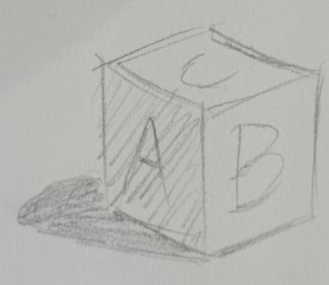
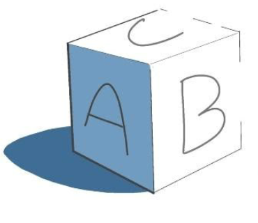
Ibis Paint (Android)
Para el diseno del emblema del equipo se hizo un boceto en papel previo a la elaboración digitalizada.
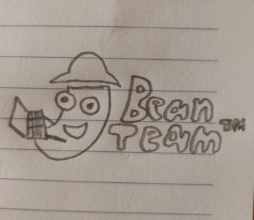
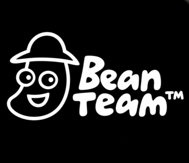
Photoshop CS6
Los sprites utilizados en el juego fueron dibujados primero como ilustracion visual dibujada a mano para ver las partes que compondrian el HUD y otros detalles, despues para conservar su calidad se importaron de ibis paint a Photoshop CS6.
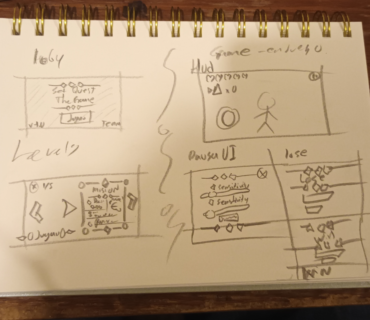
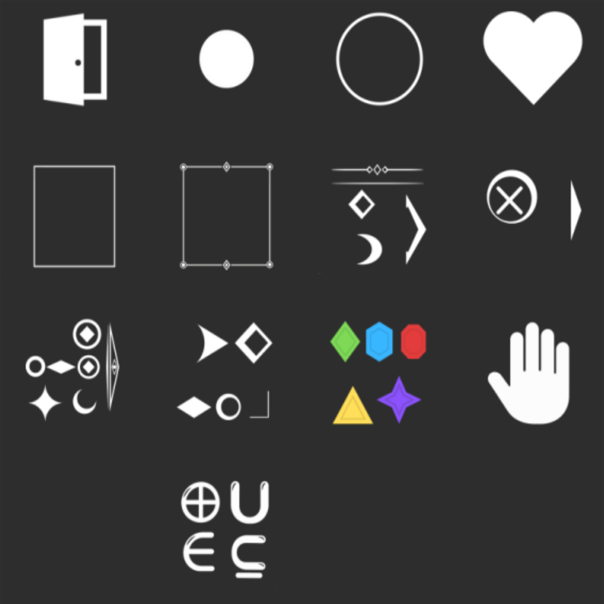
Photoshop CS6
Necesitábamos una manera de indicar el dano del enemigo hacia el personaje y obtuvimos una forma creativa de dibujar sangre con un pincel especial de Ibis paint llamado "Gotero", esto y una capa roja superpuesta nos da un efecto de dano de sangre en pantalla muy caracteristico de este estilo de juegos, elaborado en Ibis paint e importado a Photoshop CS6 para mantener calidad.
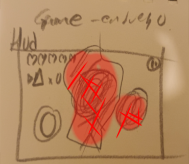
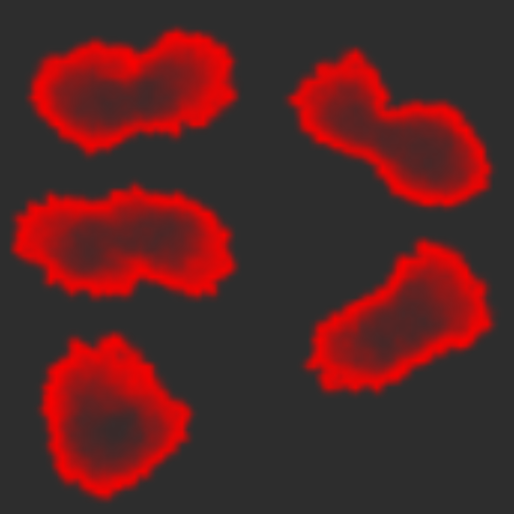
Lapiz y papel
Para la elaboración del personaje en 3D del protagonista del juego se hizo un boceto en papel previo a su elaboración en el motor de graficos 3D.
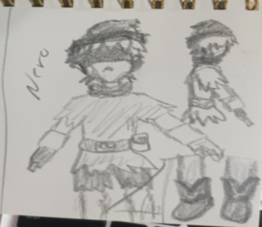
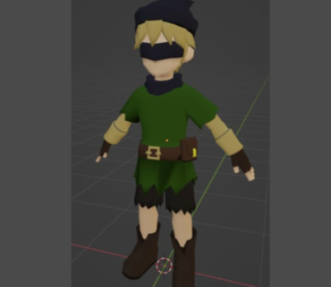
Lapiz y papel
Para la elaboración del escenario en 3D del juego se hizo un boceto en papel previo a su elaboración en el motor de graficos 3D.
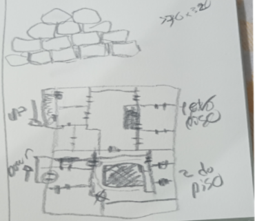
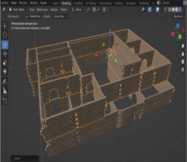
Edición de imágenes y mejora de calidad en Photoshop CS6
Adobe Photoshop CS6 es un programa de edición de imágenes que permite
crear composiciones, insertar fotografías, eliminar fondos, modificar
colores, mejorar la nitidez y preparar imágenes para videojuegos,
diseños gráficos y proyectos digitales.
1. Cómo insertar una imagen
Abre Adobe Photoshop CS6.
Selecciona File > Open para abrir una imagen existente.
Para agregar otra imagen al proyecto, utiliza File > Place.
Selecciona la imagen que deseas insertar.
Presiona Enter para confirmar su colocación.
Utiliza Ctrl+T para cambiar su tamaño, posición o rotación.
Presiona Enter para aplicar los cambios.
2. Herramientas principales de Photoshop CS6
Herramienta
Función
Move (V)
Mover imágenes y capas.
Crop (C)
Recortar imágenes.
Brush (B)
Pintar y modificar imágenes.
Eraser (E)
Borrar partes de una capa.
Magic Wand (W)
Seleccionar áreas por similitud de color.
Lasso (L)
Realizar selecciones manuales.
Clone Stamp (S)
Copiar partes de una imagen para retocar.
Text (T)
Agregar texto.
Eyedropper (I)
Seleccionar colores de la imagen.
Layers (F7)
Organizar elementos por capas.
3. Cómo mejorar la calidad de una imagen
Para mejorar una imagen puedes utilizar herramientas de ajuste de
iluminación, contraste, color y nitidez. Abre Image > Adjustments
y selecciona los ajustes que necesites. Es recomendable conservar
una copia original antes de realizar modificaciones.
Opción
Función
Ubicación
Brightness/Contrast
Mejorar iluminación y contraste.
Image > Adjustments
Levels
Corregir luces, sombras y tonos.
Image > Adjustments
Curves
Controlar la iluminación y los tonos.
Image > Adjustments
Hue/Saturation
Modificar colores e intensidad.
Image > Adjustments
Unsharp Mask
Mejorar la nitidez de los detalles.
Filter > Sharpen
Reduce Noise
Reducir ruido visual.
Filter > Noise > Reduce Noise
4. Cómo aumentar la resolución de una imagen
Abre la imagen que deseas mejorar.
Entra en Image > Image Size.
Activa Resample para modificar la cantidad de píxeles.
Escribe el nuevo ancho y alto deseados.
Selecciona una opción de interpolación adecuada, como Bicubic Smoother para ampliar.
Presiona OK para aplicar los cambios.
Importante: Aumentar la resolución no recupera
automáticamente los detalles que no existían en la imagen original.
Una ampliación excesiva puede producir imágenes borrosas o artificiales.
5. Cómo eliminar un fondo
Abre la imagen.
Utiliza Magic Wand (W) o Quick Selection (W).
Selecciona el fondo que deseas eliminar.
Presiona Delete si la capa permite transparencia.
Para mejorar los bordes, utiliza Select > Refine Edge.
Guarda el resultado en formato PNG para conservar la transparencia.
6. Cómo guardar y exportar imágenes
Formato
Uso
PSD
Conservar el proyecto con sus capas editables.
PNG
Imágenes con transparencia y gráficos.
JPG
Fotografías con menor tamaño de archivo.
BMP
Imágenes de mapa de bits sin compresión habitual.
Selecciona File > Save As.
Elige el formato deseado.
Selecciona la carpeta de destino.
Presiona Save.
Si utilizas JPG, selecciona la calidad de compresión.
Elaboración de dibujos digitales con ibis Paint en Android
ibis Paint es una aplicación de dibujo digital para Android que permite
convertir fotografías de bocetos hechos a mano en ilustraciones digitales.
Mediante el uso de capas, pinceles, herramientas de selección y colores,
puedes realizar dibujos de personajes, objetos, escenarios y diseños
para videojuegos.
1. Cómo importar una fotografía del boceto
Abre ibis Paint en tu dispositivo Android.
Selecciona Mi galería y pulsa el botón + para crear un lienzo.
Selecciona Importar imagen.
Busca la fotografía de tu boceto en la galería.
Ajusta su tamaño y posición dentro del lienzo.
Confirma la importación.
2. Herramientas principales de ibis Paint
Herramienta
Función
Brush (Pincel)
Dibujar líneas y colorear.
Eraser (Borrador)
Eliminar trazos.
Layers (Capas)
Separar boceto, contornos y colores.
Bucket (Bote de pintura)
Rellenar áreas cerradas con color.
Eyedropper
Seleccionar colores existentes.
Selection Area
Seleccionar zonas específicas del dibujo.
Transform
Modificar tamaño, posición y rotación.
Blur
Suavizar o difuminar colores.
Clipping
Limitar una capa a la zona de otra capa.
3. Cómo convertir el boceto en un dibujo digital
Importa la fotografía del boceto.
Abre el menú de capas y reduce la opacidad de la fotografía.
Crea una nueva capa encima del boceto.
Selecciona un pincel adecuado para dibujar los contornos.
Repasa las líneas principales de tu dibujo.
Utiliza el borrador para corregir errores.
Cuando termines, puedes ocultar la capa de la fotografía original.
4. Cómo colorear el dibujo
Una vez terminado el contorno, crea una capa nueva debajo de la capa
de líneas. Selecciona los colores desde la paleta y utiliza el pincel
o el bote de pintura para rellenar las diferentes partes del dibujo.
Puedes separar los colores en distintas capas para modificar cada
parte sin afectar las demás.
Capa
Contenido
Capa 1
Fotografía del boceto original.
Capa 2
Colores base.
Capa 3
Sombras y detalles.
Capa 4
Contornos y líneas finales.
Capa 5
Brillos y efectos adicionales.
5. Cómo mejorar los detalles y acabados
Utiliza pinceles de diferentes tamaños para los detalles.
Agrega sombras en las zonas que quieras oscurecer.
Utiliza luces y brillos para dar profundidad.
Corrige los bordes con el borrador.
Utiliza zoom para trabajar en detalles pequeños.
Activa la estabilización del pincel para conseguir trazos más uniformes.
6. Cómo exportar el dibujo
Formato
Utilidad
PNG
Conservar calidad y transparencia.
JPG
Compartir imágenes con menor peso.
IPV
Guardar el proyecto editable de ibis Paint.
Abre tu dibujo terminado.
Selecciona el botón de compartir o exportar.
Elige PNG para conservar la transparencia o JPG para una imagen convencional.
Guarda el archivo en tu dispositivo.
Conserva también el proyecto editable para realizar modificaciones posteriores.
Algunos modelos 3D se crearon sin base o boceto de primer paso como los elementos del juego y los muebles y decorativos.
Programa
Descripcion
Bocetos
Resultados
Blender 3.0.1
Para la elaboración del escenario en 3D del juego se hizo un boceto en papel previo a su elaboración en el motor de graficos 3D.
Blender 3.0.1
Para la elaboración del personaje en 3D del protagonista del juego se hizo un boceto en papel previo a su elaboración en el motor de graficos 3D.
Blender 3.0.1
Para la elaboración de este modelo se hizo un boceto a mano y textura en .jpg desde ibis paint (mejorada con una IA generadora de imagenes), despues importada a Photoshop para mmejorar la calidad y mejorar los colores para que fueran mas naturales.
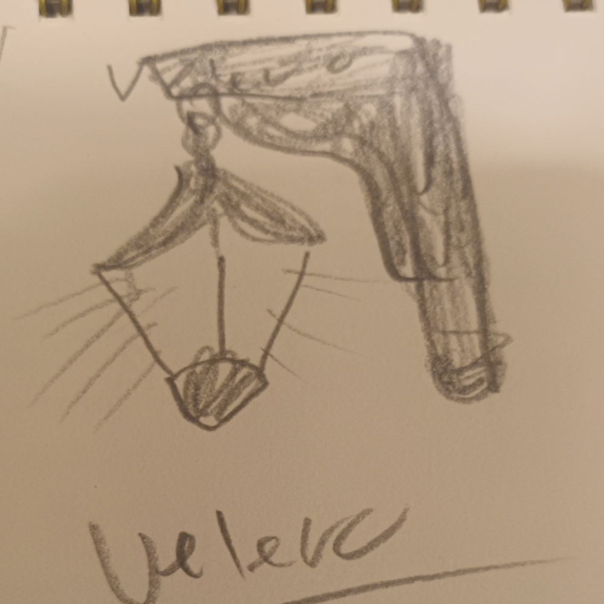
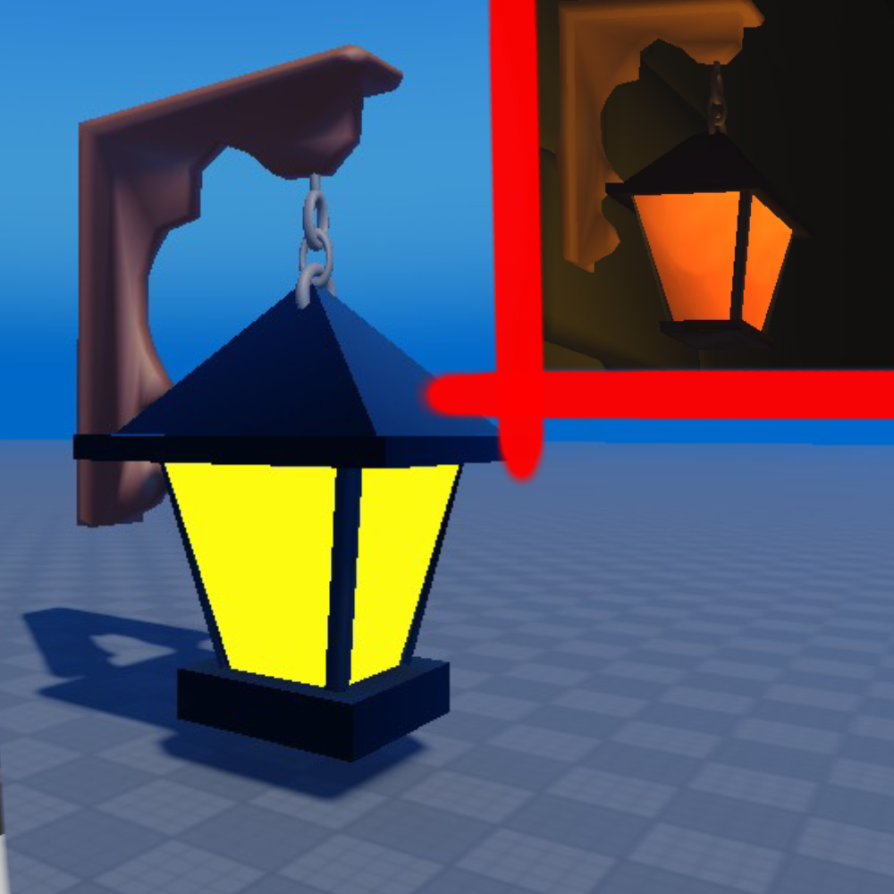
Blender 3.0.1
En la elaboración de este modelo solo se hizo un boceto simple y sencillo ya que
bleder ofrece mucha facilidad de creación de circulos perfectos y se uso un material de color luminoso(componente emision), para generar luminisencia en el ambiente oscuro del juego.
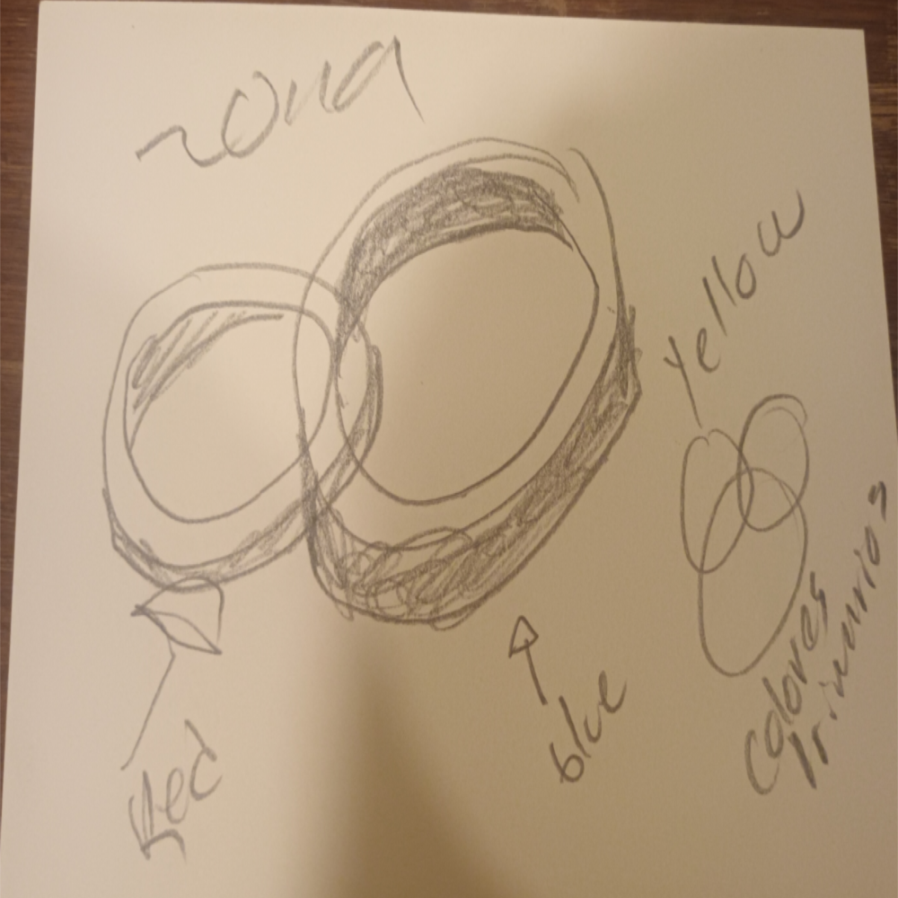
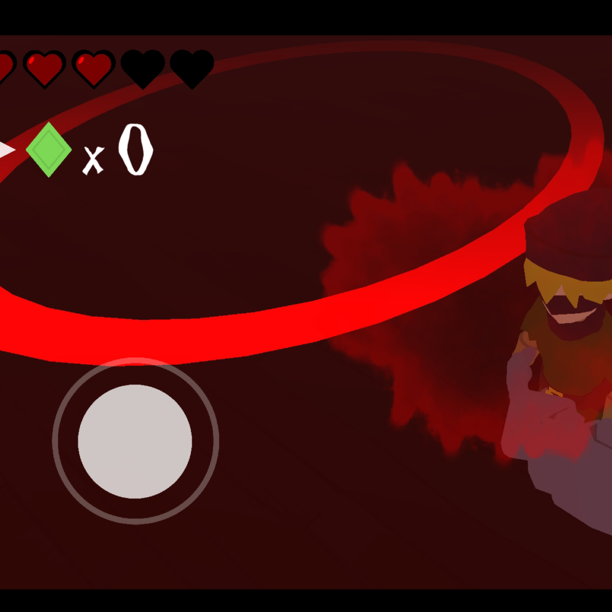
Blender 3.0.1
Para la creación de los elementos en Blender no se utilizo boceto previo
a la elaboración pero se hizo uno de forma apresurada
para meter en esta tabla nada mas xD.
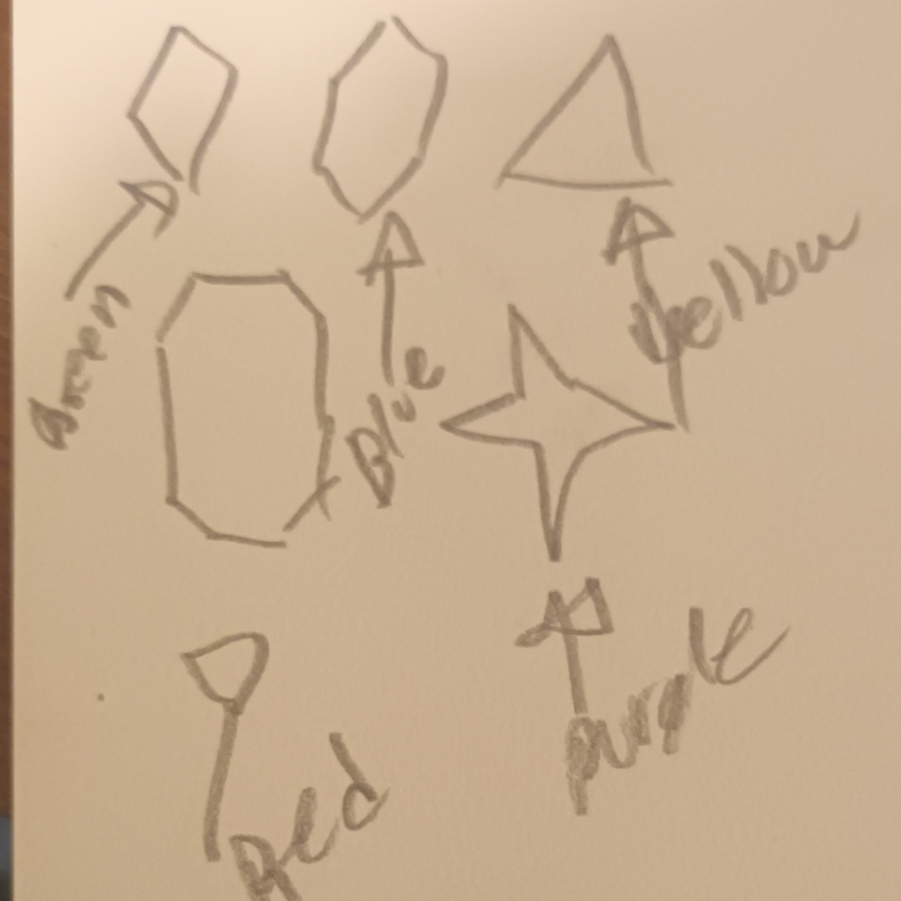
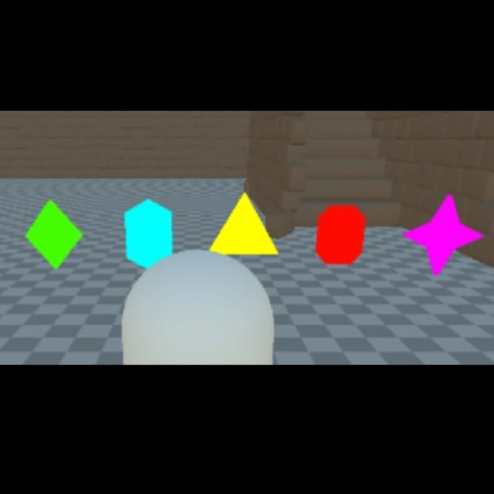
Blender 3.0.1
En el proceso delaboración de los muebles y decorativos del juego
realmente no se necesito bocetos a mano, se crearon de forma basica
y de bajo poligonaje pero a corde al ambiente del juego.
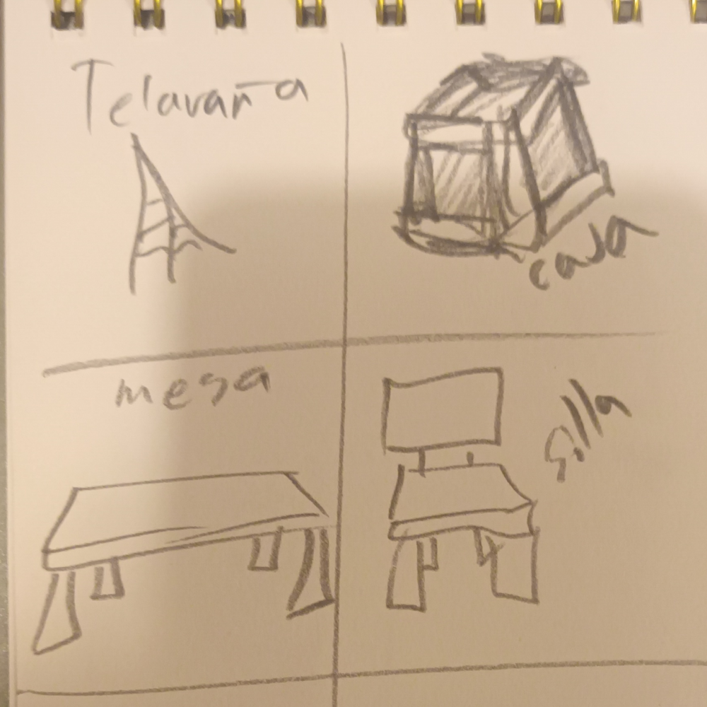
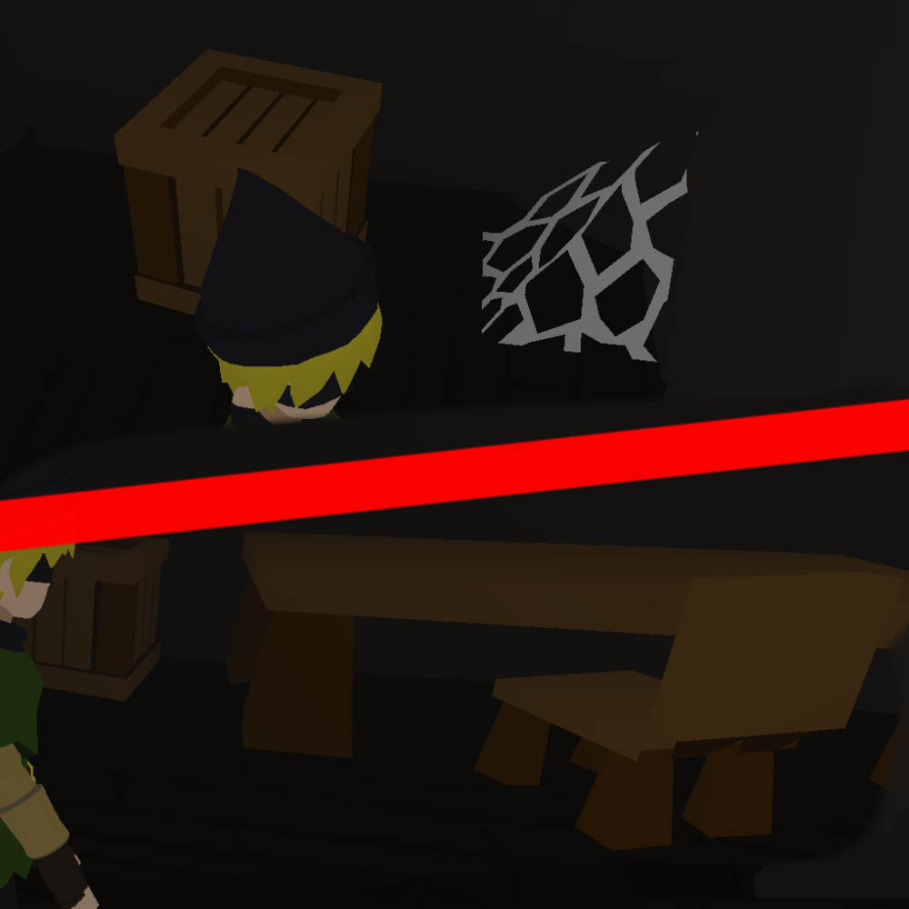
Cómo importar un archivo FBX a Blender 3.0.1 y designar jpg en el material
Cuando importas un modelo FBX en Blender 3.0.1 y sus materiales se ven completamente de color rosa, significa que el motor de renderizado no está encontrando las texturas asociadas o las rutas de los archivos de imagen se rompieron. A continuación te explicamos paso a paso cómo importar tu modelo y solucionar este problema visual.
Busca y selecciona tu archivo 3D en el explorador de archivos. Asegúrate de revisar las opciones de importación en el panel derecho (como activar Automatic Bone Orientation si el modelo tiene animación).
2. Identificar el error rosa
Cambiar al modo de visualización de Material o Render
Si pones la vista en Material Preview o Rendered y el modelo se ve rosa, indica que Blender perdió la ruta de la textura original o el sombreador (Shader) está desconectado.
3. Abrir el Editor de Sombreado
Cambiar una ventana a Shader Editor (Editor de nodos)
Seleccióna tu objeto en la escena, abre el panel de nodos (Shader Editor) abajo y busca el nodo Principled BSDF que tiene su entrada Base Color vacía o con una textura faltante.
4. Reasignar la textura de imagen
Añadir un nodo de Imagen y cargar el archivo
Presiona Shift + A, ve a Texture > Image Texture y conéctalo al Base Color del Principled BSDF. Haz clic en Open y selecciona la imagen correspondiente desde tu carpeta de texturas.
5. Empaquetar texturas (Opcional)
Menú File > External Data > Automatically Pack Resources
Para evitar que las texturas se vuelvan a poner rosas si cambias el proyecto de carpeta, utiliza esta opción para guardar las imágenes directamente dentro del archivo .blend.
Paso a paso de creación de modelos 3D en Blender y exportación
Blender es un programa gratuito que permite crear modelos 3D,
personajes, escenarios y objetos para videojuegos. El proceso
comienza creando un objeto mediante las figuras básicas (Cube,
Sphere, Cylinder), después se modifica su geometría, se agregan
materiales y texturas, y finalmente se exporta para utilizarlo
en motores como Unity.
1. Herramientas principales de Blender
Herramienta
Función
Move (G)
Mover objetos o vértices.
Rotate (R)
Girar objetos.
Scale (S)
Cambiar el tamaño.
Edit Mode (Tab)
Modificar vértices, aristas y caras.
Extrude (E)
Extender caras y crear geometría.
Inset (I)
Crear una cara interior.
Bevel (Ctrl+B)
Redondear bordes.
Loop Cut (Ctrl+R)
Agregar cortes y divisiones.
2. Cómo crear un modelo 3D
Abre Blender y elimina el cubo inicial si no lo necesitas.
Presiona Shift+A para agregar una figura 3D.
Selecciona el objeto y utiliza G, R y S para modificarlo.
Presiona Tab para entrar en Edit Mode.
Utiliza vértices, aristas y caras para darle forma.
Utiliza Extrude, Inset y Bevel para agregar detalles.
Guarda tu proyecto con Ctrl+S.
3. Cómo agregar una imagen como material o textura
Para colocar una imagen sobre un modelo 3D debes utilizar
un material con una textura de imagen. Primero selecciona
el objeto, abre la pestaña Shading y crea un material.
Después agrega un nodo Image Texture, pulsa New o Open
y selecciona la imagen que deseas utilizar.
Elemento
Función
Material Properties
Crear y administrar materiales.
Image Texture
Agregar una imagen como textura.
UV Editing
Distribuir la imagen sobre las caras del modelo.
UV Unwrap (U)
Desplegar las caras para ajustar la textura.
UV Editor
Mover, escalar y girar las partes de la textura.
4. Cómo ajustar una imagen para cada cara del modelo
Si quieres que cada cara de un cubo tenga una imagen o
parte diferente de una imagen, utiliza UV Editing.
Selecciona el modelo, entra en Edit Mode, selecciona
las caras que deseas modificar y presiona U para abrir
las opciones de desenvoltura UV. Selecciona Unwrap o
Smart UV Project. En UV Editor podrás mover (G), girar (R)
y escalar (S) cada sección para colocarla sobre la parte
exacta de la imagen. Así puedes asignar una zona diferente
de una misma textura a cada cara del modelo.
5. Cómo exportar el modelo para Unity
Guarda tu proyecto de Blender.
Selecciona el modelo que deseas exportar.
Abre File > Export > FBX (.fbx).
Activa Selected Objects para exportar únicamente los objetos seleccionados.
Comprueba la escala y la orientación del modelo.
Presiona Export FBX.
Importa el archivo .fbx en la carpeta Assets de Unity.
Si utilizaste imágenes como texturas, impórtalas también a Assets y configura los materiales en Unity.
Importante: El archivo FBX puede guardar información
del modelo, materiales y coordenadas UV, pero las imágenes
de textura deben acompañar al archivo o estar correctamente
incluidas en la exportación. En Unity comprueba que las texturas
estén asignadas a sus materiales.
En nuestro proyecto, los archivos de audio se estructuran separando la música ambiental de los efectos de sonido (SFX) mediante una arquitectura limpia basada en objetos vacíos (Empty GameObjects) y disparos directos de AudioClip. Todos estos recursos de audio fueron obtenidos de forma 100% gratuita desde DaFont.com para garantizar la mejor calidad sonora, ya que es una plataforma y recurso sumamente utilizado en la creación y desarrollo de videojuegos.
Clasificación y Reproducción de los Sonidos
Categoría
Archivo de Audio
Uso en el Juego
Reproductor
Música de Lobby
Lobby_Música_Fondo_1.mp3
Ambiente de menú principal y pantallas del lobby.
Música de Lobby
Lobby_Música_Fondo_2.mp3
Ambiente secundario para el menú y salas de espera del lobby.
Ambiente de Escenario
Ambiente_Fondo_Escenario.mp3
Sonido ambiental de fondo mientras el jugador explora el escenario.
Efecto de Sonido (SFX)
Abrir_Puerta.mp3
Efecto puntual al interactuar y abrir puertas en el nivel.
Efecto de Sonido (SFX)
Ataque_Enemigo.mp3
Sonido ejecutado cada vez que el Gólem realiza un ataque.
Efecto de Sonido (SFX)
Caminar_Player_Sonido.mp3
Efecto de pasos durante el desplazamiento del personaje.
Efecto de Sonido (SFX)
Ganaste_Música.mp3
Sonido de celebración al completar el objetivo o ganar la partida.
Efecto de Sonido (SFX)
Sonido_Click_Button.mp3
Efecto que suena cada vez que un botón de la interfaz es pulsado.
Efecto de Sonido (SFX)
Tomar_Elementos_Sonido.mp3
Efecto al recolectar objetos o ítems dentro del escenario.
Implementación en Unity 2022.3.62f1
Para integrar y controlar estos audios siguiendo exactamente la arquitectura del proyecto, aplicamos la siguiente configuración dentro del motor:
Tipo de Sonido
Componente en Unity
Configuración
Método de Activación y Control
Música de Lobby y Ambiente de Escenario
Empty GameObjects con Audio Source
Play On Awake activado, Loop activado y Spatial Blend en 0 (2D).
Se crean objetos vacíos dedicados por pista (Audio_Lobby_1, Audio_Lobby_2, Audio_Ambiente_Escenario). Para iniciar o detener el sonido, simplemente se enciende o se apaga el objeto vacío completo mediante SetActive(true) o SetActive(false).
Efectos de Sonido en Botones (UI)
AudioClip + Audio Source
Referencias directas de tipo AudioClip vinculadas al evento del botón.
Cada vez que un botón es pulsado en la interfaz, su evento OnClick() manda llamar al AudioClip correspondiente mediante PlayOneShot para reproducirlo al instante sin cortar otros audios.
Efectos de Sonido en Ataques del Gólem y Acciones
AudioClip en Scripts de Juego
Variables públicas de tipo AudioClip asignadas en el Inspector del Gólem y del jugador.
Cuando el Gólem ejecuta su ataque (o el jugador abre puertas, camina o toma elementos), el script dispara el AudioClip puntual usando PlayOneShot, sincronizando el sonido exactamente con la acción.